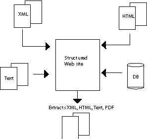
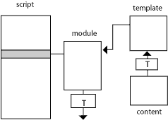

<?xml version="1.0" encoding="UTF-8"?> <wscript version="1.0"> <definitions> <template id="P" location="p_template.xml"/> <command id="com1" line="${_scriptcatalog}/compdf.bat"/> </definitions> <module name="Velkommen" template="P" location="index.html"> <summary> <![CDATA[ <p>Welcome</p> <img src="http://www.ia.hiof.no/~borres/self/self.gif"/> ]]> </summary> <xmlcontent location="velkommen.xml"/> <module name="side1" books="all" template="P" location="side1.html"> <xmlcontent location="side1.xml"/> </module> <module name="side2" books="all" template="P" location="side2.html"> <xmlcontent location="side2.xml"/> </module> </module> <module name="vinbok" template="P" location="vinbok.html" runafter="com1"> <xmlcontent location="vinbok.xml"/> </module> </wscript>
Content
WXT

WXT is an engine built with Java 1.7. It requires no server installation, and may be from the command-line or with a GUI.
The structures built by WXT is available for styling with CSS. The relationship between structure and presentation is described in the documentation and a "standard" stylesheet is distributed with WXT.
Some WXT features is dependant on a few simple Javascripts. These Javascripts are also distributed with WXT. The Javascript is relying on jQuery [7] . The distributed script uses a modified version of a dragging-script from Quirksmode [8]
WXT produces material that can easily be converted to PDF. WXT does not have any built-in XML-to-PDF converter. It does however work very smooth with Prince XML [9] . For legal and financial reasons Prince is not distributed with WXT. You can easily run Prince from a WXT script, as an external command, and thus integrate pdf-production in the building (maintenance) process. You may also automate a transformation to XSL-FO and make pdf from this format with FOP [10] . Or you may have access to another pdf-tool.
WXT will in some situations perform an attempt to tidy input. This job is performed with Tidy [11] .
The idea of WXT is not to replace any of the well known web tools, like php, ruby or whatever. The idea is to add functionality that simplifies sharing, maintenance and extraction. Any content that can be housed on a well formed web page can be identified and moved by WXT.
Basics
[
The script
] [
Processing Instructions
] [
Running WXT
]
WXT is based on two concepts:
- a script that describes the structure and the modules we want to build.
- the interpretation of Processing Instructions (PI) which are standard XML-nodes.
Both are explained in detail in Documentation .
The script

The functionality of WXT is based on a script, which is a XML-file. The basic concept is a module. A module is described by a template and any number of sources. The sources may be XML, Database, XHTML, Text, HTML(5). HTML-content that are not well formed and out of the authors control(typically Wiki) may be tidied on the fly. The template must always be a XML or XHTML file.
One of the key-concepts in this kind of module building is addressing. WXT recalculates references in fragments that are moved.
Although the main focus in WXT is on XML-structures, you can also use plain text as content. Typically you can import program code snippets an get them color coded as HTML on your module.

Since the main target of WXT is to share material on the web (or on paper) a lot of the concepts in WXT is (X)HTML oriented. You may however use the basic building mechanisms in WXT to produce any kind of XML, or text for that matter.
One key to this flexibility is the use of XSLT. You may transform content before you bring it to the template and you may transform a module before you save it.
Processing Instructions
The other key concept in WXT is the use of processing instructions. A processing instruction (PI) is legal XML in any XML-file. The program that parses a XML-file will detect the PI's and may act on them. The format of a PI is like this:
<?name data?>
The name and data may have any value. WXT will recognize and react on PI's with name _wxt. The data part is interpreted as a command identifier followed by a series of name, value pairs. Just like attributes in a XML-element. For instance:
<?_wxt importxml location="myfile.xml" xpath="//div[@id='export']"?>
will instruct WXT to extract the div with id="export" from the file myfile.xml and replace the PI with the result. The following:
<?_wxt modulemap books="math"?>
will instruct WXT to produce links to all modules that are marked with book="math" in the script.
Running WXT
You can run WXT from the command line with the following syntax (windows):
java -jar wxtn.jar script.xml [-m module1[,module2]]
For instance:
java -jar C:\myWxt\dist\wxt6.jar C:\mysite\script.xml java -jar C:\myWxt\dist\wxt6.jar C:\mysite\script.xml -m firstpage,lastpage
You may also download the GUI, see Download , and control the building in more detail.
Documentation of script, processing instructions (PI) and descriptions of some topics.
as PDF if ypu like.
The Script
The script is a XML-file. All jobs that WXT can perform, small or big, must be described by a script. The root element must be wscript and the only version is 1.0.
The script consists of one definitions element, and any number of module elements. A module is the basic unit built by WXT. A module is typically a webpage.
An outline of a WXT version 1.0 script:
WXT scripts is validated according to the schema:
Script: definitions-element
The wscript-element must contain one and only one definitions element. The definitions element defines concepts which is used during a build process, like references, options, templates, transformations, commands, pathfragments, fragments.
<definitions anchor="" pubanchor=""> ... </definitions>
| anchor (optional) | A string that is a path to a catalog. This value is available as a predefined pathfragment _scriptanchor. Default value is the catalog that contains the script. The latter is also available as predefined pathfragment: _scriptcatalog. |
| pubanchor (optional) | A string that is an url to the catalog where this site is (going to be) published. If defined, this is available as pathfragment: _pubanchor |
The definitions element may contain any number of the following elements, in any order:
- Options
- PathFragment
- Fragment
- Fragments
- Author
- Authors
- Images
- Formulas
- ODTFormulas
- Template
- Transformation
- Command
- References
- Addressing
and one element of type: Logfile
Examples:
<definitions> <pathfragment id="commons" value="../commons"/> <template name="T" location="${commons}/p-template.xml"/> </definitions>
Script: addressing-element
The idea of an addressing element is to tell WXT which addresses that should be considered for readdressing when xml-fragments are moved, for instance from a content file to a template. The definitions element may contain any number of addressing elements.
<addressing tag="" attribute=""/>
You should consider following preset:
<addressing tag="a" attribute="href" /> <addressing tag="img" attribute="src" /> <addressing tag="script" attribute="src" /> <addressing tag="link" attribute="href" />
The attributes named in these elements will be subject to address calculation when file fragments are moved.
NOTE: The tags and attributes given are case sensitive.
| tag(mandatory) | Any string that identifies a tag name for an element that contains an attribute which is a location/uri that is a candidate for readdressing when we move xmlfragments. |
| attribute(mandatory) | Any string that identifies an attribute in an element with name tag, see above. |
| cancel(optional) | Value yes will turn addressing off for this elements with this attribute. no is default. The reason for turning addressing off is mainly processing speed. |
An addressing element may not contain any elements.
Examples:
<addressing tag="a" attribute="href" cancel="yes"/>
Script: author-element
An author is used to define an author. author is an optional attribute in a module. The definition-element may contain any number of author-elements.
<author id="" name="">...</author>
| id(mandatory) | Any string that will identify this author. |
| name(mandatory) | The displayed name of the author. |
All modules are given a default author. You may set this by the id: _default:
<author id="_default" name="My self"/>
If default author is not set it defaults to: "Site author".
Examples:
<author id="bs" name="Brre Stenseth"/>
or
<author id="bs" name="Brre Stenseth"> <![CDATA[ <div style="font-weight:bold"> <a href="http://www.a.b/mypage.html">homepage</a> </div> ]]> </author>
Script: authors-element
A authors-element is a reference to a file with authors. The definition-element may contain any number of authors-elements.
<authors location=""/>
| location(mandatory) | Location of the file with authors. The location is corrected for pathfragments. |
| encoding(optional) | If not set, the encoding of the using module is assumed. |
Examples:
<authors location="allauthors.xml"/>
and the file, allauthors.xml may look like this:
<?xml version="1.0" encoding="UTF-8"?> <authors> <author id="ml" name="Mats Lund">Student 2005</author> <author id="jb" name="Jon Brown"> <![CDATA[ <img src="http://www.a.b/self.gif" alt="self"/> ]]> </author> </authors>
The content of a fragment element may be a simple text or any legal XML-fragment wrapped as CDATA.
Script: command-element
The purpose of a command is to introduce jobs that will be executed outside WXT. Examples are ant-tasks, Prince and even running WXT with a different script. The definitions element may contain any number of command elements.
<command id="" line="" wait=""/>
| id (mandatory) | Any string that identifies the command. This id is used to issue the command from runafter or runbefore attribute of Module |
| line(mandatory) | The command as it would have been typed from the command line. The line may use pathfragments. |
| wait (optional) | yes or no. yes means that the command should finnish before WXT continues. no is default. |
A command element may not contain any elements.
Examples:
<command id="copy" line="${myjobs}/myjobs.bat" /> <command id="makepdf" line="${ppath}/prince -s ${mystyles}/pstyles.css" ${mypages}/mypage.html/>
where myjobs, ppath, mystyles and mypages are defined as pathfragments in the definitions element.
Script: formulas-element
The formulas-element must be contained in a definitions-element
This element loads formulas from an XML-file. The formulas may be in one of three forms:
- image (png,gif,jpg)
- mathml
- latex
All this formulas is available by the PI Formula and they will apear in formulalists, see PI Formula List .
image and latex formulas will be presented as img.
The present version of WXT displays mathml formulas as MathML.
See Formulas for a full description.
<formulas location=""/>
| location(mandatory) | The location of the document containg the formulas, absolute or relative to the script (anchor). |
Examples:
<formulas location="myformulas.xml"/>
Example file:
<?xml version="1.0" encoding="UTF-8"?> <formulas> <formula id="f1" type="latex"> <value>\sqrt[3]{x^3 + y^3 \over 2}</value> </formula> <formula id="f21" type="image"> <subtext>Vector length</subtext> <value>vektor1.gif</value> </formula> <formula id="f31" type="mathml"> <subtext>Simple sum</subtext> <value><![CDATA[<math xmlns="http://www.w3.org/1998/Math/MathML"> <semantics> <mrow> <mrow> <mo stretchy="false"></mo> <mi>f</mi> </mrow> <mrow> <mo stretchy="false">(</mo> <mi>x</mi> <mo stretchy="false">)</mo> </mrow> </mrow> </semantics> </math>]]> </value> </formula> </formulas>
Script: fragment-element
The purpose of a fragment is to define a (X)HTML fragment that may be reused. A fragment is placed on a module by the PI: Fragment . The definition-element may contain any number of fragment-elements.
<fragment id=""> content </fragmet>
| id(mandatory) | Any string that will identify this fragment. |
| short(optional) | A string. May be accessed in fragment PI instead of content. Content defaults to short and short defaults to id. |
The content of a fragment element may be a simple text or any legal XML-fragment wrapped as CDATA.
Note that fragment may be used as author identification, see Module . A special predefined author id, _defaultauthor, comes in handy. It defaults to Site author, and you may change it as shown below. All modules are supposed to have this author if not told otherwise.
Examples:
<fragment id="myroot"> <![CDATA[ <span style="font-weight:bold"> bs </span> ]]> </fragment>
or
<fragment id="mygreetings">hello all</fragment>
or
<fragment id="_defaultauthor">Brre Stenseth</fragment>
or
<fragment id="jb" short="Brown, John"> <![CDATA[ <div> Jhon Brown, Author of many books on math<br/> <a href="http://www.a.b">JB's blog</a> </div> ]]> </fragment>
Script: fragments-element
A fragments-element is a reference to a file with fragments Fragment . The definition-element may contain any number of fragments-elements.
<fragments location=""/>
| location(mandatory) | Location of the file with fragments. The location is corrected for pathfragments. |
| encoding(optional) | If not set, the encoding of the using module is assumed. |
Examples:
<fragments location="myfragments.xml"/>
and the fragment file, myfragments.xml may look like this:
<?xml version="1.0" encoding="UTF-8" standalone="no"?> <fragments> <fragment id="head"> <![CDATA[ <meta http-equiv="Content-Type" content="text/html; charset=utf-8"></meta> <title><?_wxt fragment id="_name"?></title> <link rel="STYLESHEET" href="stdstyle.css"/> <link rel="STYLESHEET" href="mathstyles.css"/> <script type="text/javascript" src="prototype.js"> </script> <script type="text/javascript" src="std.js"> </script> ]]> </fragment> <fragment id="banner"> <![CDATA[ <?_wxt image id="bs-2"?> <hr/> ]]> </fragment> <fragment id="leftcolumn"> <![CDATA[ <?_wxt modulemenu summary="no"?> <div style="margin-left:20px; margin-top:20px"> </div> ]]> </fragment> <fragment id="signature"> <![CDATA[ <hr/> <div>bs with <?_wxt stamp?></div> ]]> </fragment> </fragments>
The content of a fragment element may be a simple text or any legal XML-fragment wrapped as CDATA.
Script: images-element
The purpose of this element is to administrate images. Keep them in one or a few catalogs, and access them easily by id, with an image PI, see Image
The images-elements must be contained in the definitions-element.
<images location=""/>
| location(mandatory) | An URI which is absolute or relative to the script anchor. This is the location of a file with image descriptions, as below. |
Examples:
<images location="myimages.xml"/>
A sample images file:
The catalog-attribute is optional. If not included the catalog containg the file is used as anchor. Note also that image locations may be absolute.
You may specify a link-attribute. The link is any URI, for instance the location of another image that appears on mouseclick.
You may also specify width, height, and alt elements in an image.
See Images for a full description.
Images files are validated according to this schema:
Script: logfile-element
The logfile-element must be contained in a definitions element. A definitions element may contain one logfile element.
<logfile location=""/>
| location(mandatory) | URI to file which is absolute or relative to the script. location is corrected for pathfragments. |
| maxlog(optional) | The max length of the logfile. Default is 100000 chars. A value of 0 will erase the log between each job. |
Examples:
<logfile location="log.txt" maxlog="0"/> <logfile location="log.txt" maxlog="50000"/> <logfile location="log.txt">
Script: odtformulas-element
The odtformulas-element must be contained in a definitions-element
This element loads formulas in MathML form from an OpenOffice document with formula-objects on it. The formulas are identified by a text paragraph immediately above the formula. This text, and thus the id, must start with _f. For instance _fMyintegral. These formulas are available by the PI Formula , containing the appropriate ids.
<odtformulas location=""/>
Note that these formulas will be presented as MathML. See Formulas for a full description.
| location(mandatory) | The location of the document containg the formulas, absolute or relative to the script (anchor). |
Examples:
<odtformulas location="myformulas.odt"/>
Script: option-element
The definition-element may contain options. These option influence the prefomance of WXT in different ways.
<option name="" value="">
| name(mandatory) | Any string that identifies this option. |
| value(mandatory) | A value matching the name. |
Reckognized option names are:
| expand-all | Possible values: yes or no. no is default. If yes, all expansions (PI:expandable) will be done, regardless of the expanded parameter in the PIs, see Expandable . |
| preformat-language | Possible values: yes or no. no is default. By default Google's prettyprint is used for colorencoding of languages. If yes, WXT's internal colorcoding is used. This is less flexible but prepares material that is encoded independant of a webbrowser. Suited for PDF conversion. See Code . |
| indent-output | Possible values: yes or no. no is default. |
| default-encoding | Default is utf-8. This encoding is used when there are no other way to decide encoding. |
| output-format | Possible values are xml, text,
html and xhtml.
html will produce modules in html5, that is without XML-header and doctype html. xhtml will produce the same as xml, but without xml-header. The doctype will be copied from the source. This is typically xhtml-strict. Default is html. The detailed effect of the output option depends of course on the templates content. |
| reference-form | Possible values are simple, ieee, harvard. Default and the only option implemented at the moment is simple. |
| reference-indexing | Possible values are local and global. local will produce reference indices for each module. global will index references as encountered during the whole building. Default is local. |
| use-copy | Possible values are yes and no.
Default is yes. no will access the material at the original source, produce a local copy and then fetch the result from this copy. yes will import html material from the local copy directly. This option will overrun the parameter usecopy in PI: ImportHTML . |
| drop-books | You can use this to avoid building modules which are timeconsuming or should be left alone for other reasons. The value is a comma separated list of strings. The modules with matching books - attributes will be skipped when building. Space is not allowed in the string(list). |
| tidy-input | If the parsing of XML input fails, WXT will attempt to tidy the source.
You may turn this option off with value no.
Default value is yes. Tidying is not without problems, and the tidyjob of WXT is neither waterproof nor complete. Tidying is done with jsoup [12] . You may experience that the tidy job does not produce exactly what you expect. |
| verbose | May be yes or no. no is default.
when yes WXT will produce more detailed output of errors and warnings in the build process. |
Examples:
<option name="expand-all" value="yes"/> <option name="default-encoding" value="ISO-8859-1"/> <option name="indent-output" value="yes"/> <option name="drop-books" value="topdf"/>
Script: pathfragment-element
The purpose of a pathfragment is to define a path that can be used in other parts of the script, and in most processing instructions that has a location as attribute. This is helpfull if we want to rearrange our filestructure. A pathfragment may be any part of a path. The definition-element may contain any number of pathfragments.
<pathfragmet id="" value=""/>
| id(mandatory) | Any string that will identify the pathfragment. |
| value(mandatory) | Any string that is a legal part of an URI or a filepath. |
| alternative(optional) | Any string that is a legal part of an URI or a filepath. If your script is used both on windows and an operating system with unix-like filepaths, you may use value and alternative to describe both alternatives. WXT will select the one that is most likely to be matching the current operating system. (looking for cases like 'n:\' or '\' or '/'). When alternative is not used, WXT does not discriminate between \ and /. |
The pathfragment _scriptcatalog is predefined as the filepath to the catalog containing the script
The pathfragment _scripturi is predefined as the URI defining the script, as string
A pathfragment is treated "as is".
Pathfragments are used like this: ${fragmentid}, see for instance Command
Examples:
<pathfragment id="myroot" value="/mydir" /> <pathfragment id="antpath" value="c:/fixed/apache-ant/bin" /> <pathfragment id="princepath" value="c:/fixed/prince/Engine/bin" /> <pathfragment id="mydata" value="c:\fixed\data\ " alternative="/home/fixed/data/" />
Script: references-element
The purpose of a references element is to collect all (or many) references that you intend to use in your project in a file. It may simplify maintainance considerably, and it opens for a systematic reference policy. You may access the individual reference by PI Ref and you may produce reference lists by PI RefList . You may even control any URI's in a reference by PI ReferenceTest .
The definitions-element may contain any number of references elements.
<references location=""/>
| location(mandatory) | An URI which is absolute or relative to the script anchor. |
The legal elements in a reference are (in any order):
- title
- authors
- year
- chaptertitle
- journal
- editor
- place
- publisher
- pages
- isbn
- uri (with an optional attribute: dateread)
- text
- categories
Examples:
<references location="myrefs.xml"/>
A sample reference file:
Reference files are validated according to this schema:
See References for a full description.
Script: template-element
The purpose of a template element is to define id and location for a template. A template must be wellformed. It may be a HTML5-file, a XHTML-file or a XML-file. The latter is preferable due to encoding specification (in the xml-header).
The output option decides wether the XML-header should be included in the built modul.
Templates are used in Module . A definitions element may contain any number of template elements.
<template id="" location=""/>
| id(mandatory) | Any string that will identifythe template. |
| location(mandatory) | An URI which is absolute or relative to the script. location is corrected for pathfragments. |
Examples:
<template id="P" location="mytemp.xml"/>
Script: transformation-element
A transformation is any legal XSLT 1.0 transformation. The purpose of a transformation element is to define id and location for a transformation. Transformations are used in Module . A definitions element may contain any number of transformation elements.
<transformation id="" location=""/>
| id(mandatory) | A string that will identify the transformation. |
| location(mandatory) | An URI which is absolute or relative to the script. location is corrected for pathfragments. |
Examples:
<transformation id="T1" location="mytrans.xsl"/>
Script: module-element
A module is the targets of building. A module is normally constructed by filling extracts from content-files or fragments into a template. This simple model may be modified in many ways, mainly by means of transformations.
The script may contain any number of modules, and each module may contain any number of modules. The module-tree is defining the structure of the website.
<module name=""
id=""
author=""
description=""
location=""
template=""
transformation=""
books="">
...
</module>
| name(mandatory) | Any string that represents the Module in tables of contents etc. Available as fragment _name |
| description(optional) | Any string that describes the module. Default is name. Available as fragment _description |
| id(optional) | Any string that identifies the module. Default id is name.
Avaliable as fragment: _id. The id is not mandatory,
but it is strongly recommanded to give a module an id and
to use a value that contains only ascii-letters and _. The id will be used
to produce anchors and links and you may want to run WXT from the commandline with specific module ids.
The id must be unique in the context of a script. |
| author(optional) | The id of an author fragment as defined in an author-element in the definitions part of the script. If no author is given it defaults to the default author. The default author may be set in the script as <author id="_defaultauthor" name="anyname"/>. If this is not set it defaults to: "Site author". The author is available as fragment _author within the module. |
| template(optional) | Identification of a template. Either by location or by id (see: Template ). |
| transformation(optional) | A transformation identifier (see: Transformation ). This transformation is applied before the module is saved. You may set parameters to the transformation, by enclosing a comma-separated list of name='value' definitions withinin (). Example for transformation with id T: T(name='ole',address='halden') |
| location(optional) | An absolute URI identifying a filelocation, or an URI relative to the script. The module will be saved to this location. The location value may contain pathfragments. |
| anchor(deprecated, use pathfragment) | An absolute or relative path to a catalog which will serve as anchor, referencecatalog, for this modules and child modules. All relative addresses are considered relative to this anchor. The anchor may contain pathfragments. If the anchor is relative, it is calculated relative to the parent modules anchor. If the module is a rootmodule it is calculated relative to the catalog that contains the script. You can achive the same effect by using pathfragments. |
| books(optional) | A commaseparted string of books that this module is considered to be a part of. Books is a way of grouping modules. Default value is _all. The value _never will prevent the module from appearing in any lists, like modulemap and modulemenu. |
| output-format(optional) | Possible values are xml, html, xhtml and text. This will override the default value ,html, and possible value set as option in the script. It will be effective only for this module. |
| runbefore(optional) | Runs a named Command before this module is built. |
| runafter(optional) | Runs a named Command after this module is built. |
A module element may contain any number of the following elements:
and a module may contain one element of type Summary
Examples:
<module name="MyBook"
location="{mysections}/section3/myfile.hml"
template="P"
books="mylibrary"
id="mybook"
description="some temporary stuff" >
...
</module>
Script: xmlcontent-element
A xmlcontent element tells where the module shall search for XML content. The template must have a processing instructions (PI) of type importxml, see: ImportXML to realize the actual extraction of content.
A Module may contain any number of XMLContent elements.
<xmlcontent location=""/>
| location(mandatory) | Any string that represents a file, either as an absolute URI or as an URI relative to the active anchor. |
| backuplocation(optional) | Any string that represents a file, either as an absolute URI or as an URI relative to the active anchor. Is used if location for some reason is not availabe. It is not a backup in the sense that the primary file is stored here. It is up to you to supply a meaningfull backup file. |
| transformation(optional) | A transformation identifier (see: Transformation ). The transformation may have parameter list: T(name='ole',address='Halden'). This transformation is overruled by a possible transformation in the actual import PI. |
| id(optional) | An id that identifies this xmlcontent in importxml in a template. |
A xmlcontent element may not contain any elements
Examples:
<xmlcontent location="${_scriptpath}/section3/myfile.xml"/>
Script: htmlcontent-element
A htmlcontent element tells where the module shall search for HTML content. The template must have a processing instructions (PI) of type importxml, see: ImportHTML to realize the actual extraction of content.
A Module may contain any number of XMLContent elements.
<htmlcontent location=""/>
| location(mandatory) | Any string that represents a file, either as an absolute URI or as an URI relative to the active anchor. |
| backuplocation(optional) | Any string that represents a file, either as an absolute URI or as an URI relative to the active anchor. Is used if location for some reason is not availabe. It is not a backup in the sense that the primary file is stored here. It is up to you to supply a meaningfull backup file. |
| id(optional) | An id that identifies this htmlcontent in importhtml in a template. |
A htmlcontent element may not contain any elements
Examples:
<htmlcontent location="${_scriptpath}/section3/myfile.html"/>
or
<htmlcontent location="http://no.wikipedia.org/wiki/Halden"/>
Script: dbcontent-element
A dbcontent element tells where the module shall search for its content. The template of the module must have a processing instructions (PI) of type importdb, see: ImportDB to realize the actual extraction of content.
A Module may contain 1 DBContent element,
<dbcontent connection="" />
| connection(mandatory) | A complete connectionstring. |
A dbcontent element may not contain any elements
Examples:
<dbcontent connection="jdbc:mysql://a.b.no/vin?user=student&password=student" />
Script: txtcontent-element
A txtcontent element tells where the module shall search for text content. The template of the module must have a processing instructions (PI) of type importtxt, see: ImportTXT to realize the actual extraction of content.
A Module may contain any number of TXTContent elements.
<txtcontent location="" transformation="" />
| location(mandatory) | Any string that represents a file, either as an absolute URI or as an URI relative to the active anchor. |
| backuplocation(optional) | Any string that represents a file, either as an absolute URI or as an URI relative to the active anchor. Is used if location for some reason is not availabe. It is not a backup in the sense that the primary file is stored here. It is up to you to supply a meaningfull backup file. |
| transformation(optional) | A transformation identifier (see: Transformation ). The transformation may have a parameter list: T(name='ole',address='Halden'). This transformation is supposed to produce text from xml and are applied before we extract text from the content. This transformation is overruled by a possible transformation in the actual import PI. |
| id(optional) | An id that identifies this textcontent in importtext in a template. |
A txtcontent element may not contain any elements
Examples:
<txtcontent location="${_scriptpath}/section3/myfile.txt"/>
Script: xmlcontentlist-element
A Module may contain any number of xmlcontentList elements. The purpose is to have a shorthand introduction of many contentfiles to a module.
<xmlcontentlist catalog="" sourcesuffix=""/>
| catalog(mandatory) | Any string that represents a catalog, either as an absolute URI or as an URI relative to the active anchor. |
| sourcesuffix(optional) | Default is xml. |
A xmlcontentlist element may not contain any elements
Examples:
<xmlcontentlist catalog="blocks"/>
Script: txtcontentList-element
A Module may contain any number of txtcontentList elements. The purpose is to have a shorthand introduction of many contentfiles to a module.
<txtcontentList catalog="" sourcesuffix=""/>
| catalog(mandatory) | Any string that represents a catalog, either as an absolute URI or as an URI relative to the active anchor. |
| sourcesuffix(optional) | Default is txt |
A txtcontentlist element may not contain any elements
Examples:
<txtcontentlist catalog="blocks"/>
Script: summary-element
The purpose of a summary element is to have a nontrivial description of a module that is available without investigating the module itself. A module-element may contain only one summary-element.
<summary location=""> .. </summary>
| location(optional) | An uri to a file containing the summary. If location is set, the content in the element is ignored. The location is corrected for pathfragments. |
The content of a summary element may be a simple text or any legal XML-fragment wrapped as CDATA. All addresses in a summary element must either be absolute or relative to the module that owns the summary.
Examples:
<summary>
<![CDATA[
<span style="font-weight:bold">
A wonderfull page with all essentials
</span>
]]>
</summary>
or
<summary location="summary12.txt"></summary>
Dating elements in the script
All elements in the script may have a limited lifespan. You can specify the first and last date for the element to be active. This is controlled by two attributes that are not documented for each element.
Optional attributes for all elements in the script.
| firstdate | The first day this element will be used in a build process. |
| lastdate | The last day this element will be used in a build process |
The form of the attributes are: yyyy:mm:dd. You may use one, both or none. If neither is present, the element is valid at all times.
Examples:
<module name="Solutions" firstdate="2005:04:01"/> <module name="greetings" firstdate="2005:12:24" lastdate="2006:01:01"/>
Processing Instructions
Processing Instructions (PI) are legal XML elements. PIs have the general form:
<?name ..any text interpreted by the interested program ...?>
WXT has defined its own PIs which has the name _wxt. PIs may occur in template files and content files. Typically we embed PIs in the template to populate it with extracts from content.
A PI may request something( an import, some xmlfragment etc), or it may produce something ( a referencelist, a Table of Content etc). WXT simply replaces the PI with this material. If it for some reason is not possible to do so, a report is given.
The text in a _wxt PI is organized as name=value pairs, like attributes of an element. This document use the term parameter. This example instructs WXT to import the div element with attribute id main from myfile.xml:
<?_wxt importxml location="myfile.xml" xpath="//div[@id='main']"?>
The PI below will produce a modulemap with link to all modules which are children of the module that request the map:
<?_wxt modulemap select="_children"?>
PIs may be dated, just like script elements, see *Dating . You can specify a first and/or last date for a PI to be effective. The dateform is yyyy:mm:dd
<?_wxt importxml location="myfile.xml" xpath="//div[@id='xmas']" firstdate="2005:12:24" lastdate"2006:01:01"?>
Most PI's produce (X)HTML-fragments with style-classes. Usually a PI wraps it production in a tag (span or div) with a CSS class which is the same as the PI name prefixed with wxt, for instance
<div class="wxtmodulemenu">
See Styles for information on how WXT produce styling.
PI: authorlist
The purpose is to produce a complete or partial list of authors and the modules they have produced.
<?_wxt authorlist?>
The parameters are:
| idlist (optional) | A commaseparated list of module ids that we want to include. If this is set, the others (select, root and books) are ignored. |
| root (optional) | The id of the module that defines the subtree we will consider for. |
| books (optional) | A commaseparated list of book ids that we want to include. |
| select (optional) | Possible values are _siblings and _children. |
| scriptpath (optional) | The scriptpath is an xpath that is used on the script to select modules. Sample: //module[@template='P'] get all modules with template P. |
| authors (optional) | A commaseparated list of author id's that we will include. If not set, all authors are included. |
| dropdefault (optional) | May be yes or no. Default is yes, which means that the default author is omitted from the list. |
| cols (optional) | The number of columns. Default is 1. |
| show (optional) | Possible values are full or short. Default is short which is interpreted as the attribute in the fragment that desribes the author. |
The selected set of modules will be assembled according to the following rule:
- if idlist is set, the collection is as defined in the idlist.
- if idlist is not set, the collection is made up as the intersection of the modules spesified by root, book, scriptpath and select.
- if neither idlist, root, book, scriptpath or select is set, all modules are selected, except those with books attribute: _never.
Styleclass(es) describing this PI is: wxtauthorlistn, where n is the number of columns selected, see distributed std styles.
PI: authors
The purpose is to produce a simple list of all authors.
<?_wxt authors?>
The parameters are:
| form (optional) | Possible values are id, short and full. full is default and displays the content of the fragment. If short, only the short value of the author fragment is displayed. |
| cols (optional) | The number of columns. Default is 1. |
Styleclass(es) describing this PI is: wxtauthorsn, where n is the number of columns selected, se distributed std styles.
PI: collect
The purpose of a collect is to produce an XML-fragment that collects material from other modules. The other modules, those we collect from, is built if necessary.
<?_wxt collect idlist="" books="" select="" xpath=""?>
The parameters are:
| idlist (optional) | A commaseparated list of module ids that we want to include. If idlist is used, the others (select, root and book) are ignored. |
| root (optional) | The id of the module that defines the subtree we will collect from. |
| books (optional) | A commaseparated list of book ids that we want to include. |
| select (optional) | Possible values are _siblings and _children. Relative to the module that contains the collect PI. |
| scriptpath (optional) | The scriptpath is an xpath that is used on the script to select modules. Sample: //module[@template='P'] get all modules with template P. |
| xpath (mandatory) | Defining what should be collected from each of the selected modules. |
The selected set of modules will be assembled according to the following rule:
- if idlist is set, the collection is as defined in the idlist.
- if idlist is not set, the collection is made up as the intersection of the modules spesified by root, book, scriptpath and select.
- if neither idlist, root, book, scriptpath or select is set, all modules are selected, except those with books attribute: _never.
Styleclass(es) describing this PI is: wxtcollect. See distributed std styles.
Examples:
<div> <?_wxt collect books="some" xpath="//h1"?> </div>
PI: collectsummary
The purpose of a collectsummary is to produce a XML-fragment that collects summaries from other modules. If a module does not have a summary-element, the description attribute is used. (which in turn defaults to the modules name)
<?_wxt collectsummary idlist="" books="" select="" xlink=""?>
The parameters are:
| idlist (optional) | A commaseparated list of module ids that we want to include. If this is set, the others (select, root and book) are ignored. |
| root (optional) | The id of the module that defines the subtree we will collect from. |
| books (optional) | A commaseparated list of book ids that we want to include. |
| select (optional) | Possible values are _siblings and _children. Relative to the module that contains the collect PI. |
| scriptpath (optional) | The scriptpath is an xpath that is used on the script to select modules. Sample: //module[@template='P'] get all modules with template P. |
| xlink (optional) | If this is set to yes, a link to the actual module will be set up. Default is no. |
The selected set of modules will be assembled according to the following rule:
- if idlist is set, the collection is as defined in the idlist.
- if idlist is not set, the collection is made up as the intersection of the modules spesified by root, book, scriptpath and select.
- if neither idlist, root, book, scriptpath or select is set, all modules are selected, except those with books attribute: _never.
Styleclass(es) describing this PI is: wxtcollectsummary, wxtcollectsummaryheading, wxtcollectsummarycontent. See distributed std styles.
Examples:
<div> <?_wxt collectsummary idlist="fid"?> </div>
and
<div> <?_wxt collectsummary idlist="fid" xlink="yes"?> </div>
PI: collect-remote
The purpose of a collect-remote is to produce an XML-fragment that collects material from modules described and managed in an other script. The modules we collect from, is not built.
<?_wxt collect-remote idlist="" books="" scriptpath="" xpath=""?>
The parameters are:
| location (mandatory) | The absolute address of the script that describes the site we will collect from |
| idlist (optional) | A commaseparated list of module ids that we want to include. |
| books (optional) | A commaseparated list of book ids that we want to include. |
| scriptpath (optional) | The scriptpath is an xpath that is used on the script to select modules. Sample: //module[@template='P'] get all modules with template P. |
| xpath (mandatory) | Defining what should be collected from each of the selected modules. |
| encoding (optional) | Defining what encoding should be expected if this cannot be determined from the imported module-file, that is if it is not a wellformed XML-file. Default encoding is used when no other information is available. |
The selected set of modules will be a union of the selection criteria.
Examples:
<div> <?_wxt collect-remote location="http://www.a.b/what/myscript.xml" books="some" xpath="//div[@class='collectable']/*"?> </div>
PI: date
The purpose of a date is to produce today or any other date in selected form and locale.
<?_wxt date form="" country=""?>
The parameters are:
| form (optional) | The possibilities are: short, medium, long, full. Default is medium. |
| country (optional) | The possibilities are the standard 2-char code. no, en etc. Default is users locale. |
| actualdate (optional) | The date to display, default is today. The form is: yyyy:mm:dd. |
Styleclass(es) describing this PI is: wxtdate. See distributed std styles.
Examples:
<div> <?_wxt date form="full" actualdate="2008:12:24" country="no"?> </div>
PI: demolink
The purpose of a demolink is to produce a XHTML-fragment that links to any webpage. The idea is to produce a link that can be controlled by a stylesheet for media screen and print. You may display a text on the webpage and a complete URL on the printed material.
<?_wxt demolink uri="" text="" style=""?>
The parameters are:
| uri (mandatory) | The uri we want to link to. This uri is corrected for pathfragments, but is otherwise left as is. That means no addresscorrection. Normally this is an external, absolute uri. |
| text (optional) | The text we want to display. Default is the uri. |
| style (optional) | The style class we want to assign to the link. Default is demo. |
| title (optional) | The title attribute we will use. Default is external link. |
| target (optional) | If we want an show this link in another target. Note that this may result in a validation error, depending on your doctype. |
Styleclass(es) describing this PI is: demo, if not set in PI as described above. See distributed std styles.
Examples:
<div> <?_wxt demolink uri="http://www.ia.hiof.no/" text="Ostfold college" style="mystyle"?> </div>
PI: expandable
The purpose of an expandable PI is to allow an expansion/unexpansion of parts of a module.
<?_wxt expandable location="" expanded=""?>
The parameters are:
| location (mandatory if no fragmentid) | The URI of the file we want to expand. |
| fragmentid (mandatory if no location) | The fragment we want to expand. |
| title (optional) | Deprecated, use text |
| text (optional) | The text appearing in the header. |
| expanded (optional) | If you want the fragment to be initially expanded,
expanded is set to yes. no is default. NOTE that global option expand-all will override this parameter if it is set to yes. |
| transformation (optional) | A transformation identifier (see: Transformation ). This transformation may have parameters: T(name='ole' address='halden'). This transformation is applied before we attempt to extract text. The transformation used here will normally produce text. |
| leftpar (optional) | A string that serves as left parenthesis of the text we want to extract |
| rightpar (optional) | A string that serves as right parenthesis of the text we want to extract |
| select (optional) |
Will select which of the occurances of the marked (leftpar, rightpar)
textpieces we want to use. Default is all.
Possible values are: _all, _random, commaseparated list of integers
or "slice":
[a:b]-> [a..b> [a:]-> [a..limit> [:b]-> [0..b> [:-b] [limit-b..limit> |
| replace (optional) | Replaces text. We may have any number of replaces: replace, replace1, replace2, etc. The form is replace="out|in". |
| encoding (optional) | The encoding of the text we import. |
| lang (optional) | The text will be colorcoded. Mainly used for programming languages.
The value of lang may be any value supported by the stylesheet and the involved javascript. The basic encoding is based on
Google's prettyprint. The module
Code
describes the setup and values supported..
When WXT prepares material with option preformat-language=yes, WXT's own colorencoding is used. This is mainly to prepare for PDF. WXT's encoding supports the following codetypes:
|
| parse (optional) | If set to yes the extracted text is supposed to be a XML-fragment and an attempt is done to parse it and return it as a documentfragment. parse is ignored if lang is set. |
Styleclass(es) describing this PI is: wxtexpandable. See distributed std styles.
Examples:
This:
<div> <?_wxt expandable location="myfile.js" lang="lang-js" expanded="no" ?> </div>
PI: footnote
The purpose is to produce footnotes. It is based on the existence of span-tags with class="fn" in the content of the module where this PI is encountered.
<?_wxt footnote form="" ?>
The parameters are:
| form (optional) | Possible values ar:
normal: normal footnote strategy, this is default show: the footnote text will be integrated in the running text, enclosed i paranthesis. No footnotes remove: the footnotes will be removed from the text. No footnotes |
Styleclass(es) describing this PI is: wxtfnmarker,fn and wxtfootnote. See distributed std styles.
Examples:
This:
Halden is situated about 100km south of Oslo<span class="fn">Oslo is the capital of Norway</span>. ... <div> <?_wxt footnote ?> </div>
will produce this:
Halden is situated about 100km south of Oslo <span class="fnmarker">1</span> <span class="fn">Oslo is the capital of Norway</span>
<div class="footnote">
<ol>
<li>Oslo is the capital of Norway</li>
</ol>
</div>
PI: formula
The purpose of a formula is to fetch a formula in Image-, LaTeX- or MathML-form. The former two is presented as img-elements, while the latter is presented as MathML according to HTML5. LaTeX-formulas are translated to img on the fly with either WXT's internal functions based on JLaTeXMath [13] or with Google Charts Formulas [14] .
<?_wxt formula id=""?>
The parameters are:
| id (mandatory) | The formula we want to fetch. The formula is supposed to be defined in a formula file, Formulas , or an odtformula file , ODTFormulas . Alternatively this value will identify the formula introduced in sourse or location, se below. |
| type (optional) | This is mandatory if source or location is set. Possible values are image, latex, google or mathml. |
| location (optional) | The location may point to a file of one out of the 4 types: An image file (png,gif,jpg), a file containing a LaTeX-expression, a file containing LaTex for google or a file containing a MathMl-formula. |
| source (optional) | The source may contain LaTeX description of a formula according to the version used by Google Charts Features [15] (type: google) or LaTex as handled by JLaTeXMath [13] (type: latex). It is sometimes possible, but not adviced to include mathml-source |
| subtext (optional) | Any string describing the formula. Defaults to id. |
| color (optional) | Must be specified as 6 hexdigits (#FF0000) |
| backcolor (optional) | Must be specified as 6 hexdigits (#FF0000) |
| size (optional) | Applies to TeX-formulas. You may spesify a size for LaTex or google-Latex: tiny, small,large or huge. |
| style (optional) | Any CSS that will apply to the generated image-element. |
Styleclass(es) describing this PI is: wxtformula, and for MathML-formulas wxtmathml See distributed std styles.
If both source and location is set, source is used.
More about formulas in Formulas .
Examples:
<div> <?_wxt formula id="_formula1"?> </div> <div> <?_wxt formula id="f2" type="latex" size="large" source="B(t)=\sum_{i=0}^{n}B_{i}^{n}t^{i}(1-t)^{n-i}P_{_{i}}"?> </div> <div> <?_wxt formula id="f3" size="small" color="#FFFF00"?> </div>
PI: formulalist
The purpose of a formulalist is to present a list of all formulas used in a selection of modules with a reference to the modules. The formulas must be registered in a Formulas element or ODTFormulas element in the script or "on the fly" in Formula . Formulas of all three forms (TeX,Image,MathML) is listed.
<?_wxt formulalist id=""?>
The parameters are:
| idlist (optional) | A commaseparated list of module ids that we want to include. If this is set, the others (select, root and books) are ignored. |
| scriptpath (optional) | The scriptpath is an xpath that is used on the script to select modules. Sample: //module[@template='P'] get all modules with template P. |
| root (optional) | The id of the module that defines the subtree we will make a map for. |
| books (optional) | A commaseparated list of book ids that we want to include. |
| select (optional) | Possible values are _siblings and _children. |
| cols (optional) | The number of columns we want (>=1). Default value is 1. |
Styleclass(es) describing this PI is: wxtformulalist. See distributed std styles.
The selected set of modules will be assembled according to the following rule:
- if idlist is set, the collection is as defined in the idlist.
- if idlist is not set, the collection is made up as the intersection of the modules spesified by root, book, scriptpath and select.
- if neither idlist, root, book, scriptpath or select is set, all modules are selected, except those with books attribute: _never.
Example:
<div> <?_wxt formulalist books="math"?> </div>
PI: fragment
The purpose is to import a fragment defined in the script: Fragment .
<?_wxt fragment id="" ?>
The parameters are:
| id (mandatory) | The id of the fragment we want to import.
The following fragments are always defined for a module:
|
| form (optional) | Possible values are id, short and full.
full is default and displays the content of the fragment.
If short, only the short value of the fragment is
displayed.
form has no effect on fragments: _id, _name,_description and _summary. |
Examples:
This:
<div> <?_wxt fragment id="_name"?> </div>
may produce this:
<div> My module </div>
This:
<div> <?_wxt fragment id="f1"?> </div>
may produce this:
<div> <span><img alt="self1" src="http://www.ia.hiof.no/~borres/self/bs1.gif"></span> </div>
assuming that the following is defined in the script
<fragment id="f1"> <![CDATA[ <span><img alt="self1" src="http://www.ia.hiof.no/~borres/self/bs1.gif"></span> ]]> </fragment>
This:
<div> <?_wxt fragment id="f1"?> </div>
may produce this:
<div> <span><img alt="self1" src="http://www.ia.hiof.no/~borres/self/bs1.gif"></span> </div>
assuming that the following is defined in the script
<fragment id="f1" location="fragfile.txt"/>
and the file, fragfile.txt, has this content:
<span><img alt="self1" src="http://www.ia.hiof.no/~borres/self/bs1.gif"></span>
PI: gadget
The purpose of a gadget PI is to allow gadgets of different kind, for instance Google-gadgets or home made material.
<?_wxt gadget location="" expanded="" width="" height=""?>
A gadget in this context is basically either a iframe-element or a documentfragment with a header that allows opening and closing.
See Javascript for a description of nessesary Javascript.
The parameters are:
| location (optional) | The URI that will act as src for the iframe that displays the content of the gadget. |
| fragmentid (optional) | The id of a defined fragment that constitutes the content of the gadget. |
| Either location or fragmentid must be set. If both are set location is used. | |
| expanded (optional) | If you want the gadget to be initially expanded, expanded is set to yes. no is default. |
| width (mandatory) | The width of the expaned window. |
| height (mandatory) | The heigth of the expaned window. |
| title (optional) | Deprecated, use text |
| text (optional) | The text appearing in the header. |
| id (optional) | ID attribute given to the content-part (and as name if iframe). |
| movable (optional) | Default is no. When yes the user will be able to drag the gadget. |
| position (optional) | The CSS position value you want to apply. If not set and movable is set, position is set to absolute. Alternative is fixed. |
| left (optional) | The CSS positionioning value you want to apply. |
| top (optional) | The CSS positionioning value you want to apply. |
Styleclass(es) describing this PI is: wxtgadget. See distributed std styles.
Examples:
<div> <?_wxt gadget location="http://www.it.hiof.no/~borres/gadgets/geometri2/b-eks11.html" width="400px" height="300px" ?> </div>
PI: importxml
The purpose of an importxml PI is to produce an XML-fragment and replace the PI with this fragment.
WXT may attempt to do a simple tiding with jsoup [16] if parsing of the XML-material fails. Note however that even if the tidy job is successfull the result may no be exactly as you expect.
<?_wxt importxml xpath="" location="" transformation=""?>
The parameters are:
| xpath (mandatory) | Any xpath expression that identifies a nodeset that will be treated like a XML-fragment. |
| location mandatory, but optional in templates | The URI of the file we want to import from. WXT will if necessary
attempt to tidy the source.
In templates the location parameter is usually skipped. In this case all content files owned by the module in the script are searched for appropriate content unless you reduce the search with parameter id, see below. |
| transformation (optional) | A transformation identifier (see: Transformation ). This transformation may have parameters: T(name='ole' address='halden'). This transformation is applied before we attempt to extract with xpath. |
| encoding (optional) | You can spesify expected encoding if you expect the import to be without XML-header stating the encoding. Default encoding is UTF-8 if not set otherwise in script (option: default-encoding). |
| id (optional) | An id that match the id of the actual xmlimport in script. Has only meaning when this element has no location. One reason to use an id is processing time if you have many contentfiles to a module. Another reason may be that you have similar structures in different contentfiles and you want to be selective. |
Examples:
<?_wxt importxml xpath="//h1"?> <?_wxt importxml xpath="//div[@class='main']/*"?> <?_wxt importxml location="http://www.ia.hiof.no/~borres/ml/index.shtml" xpath="//div[@class='main']/*"?> <?_wxt importxml uri="../quotes/q.xml" xpath="//p[@class='quot']/*"?> <?_wxt importxml xpath="//div[@id='main']" location="b.xml" transformation="myT(para='hello',parb='goodbye')"?>
PI: importhtml
The purpose of an importhtml PI is to produce a wellformed HTML-fragment and replace the PI with this fragment. WXT may attempt to do a simple tiding with jsoup [17] if parsing of the HTML-material fails. Note however that even if the tidy job is successfull the result may no be exactly as you expect.
There are basically to forms of html-import, depending on the parameter remote, see below.
You should use importhtml in stead of importxml if you want to apply a cssselector, all though it is possible to use a xpath even in importhml if you do not set the remote-parameter. The css selection is also withjsoup [17] .
<?_wxt importhtml cssselector="" location=""?>
The parameters are:
| location mandatory, but optional in templates | The URI of the file we want to import from. WXT will if necessary
attempt to tidy the source.
In templates the location parameter is usually skipped. In this case all content files owned by the module in the script are searched for appropriate content unless you reduce the search with parameter id, see below. |
| encoding (optional) | You can spesify expected encoding if you expect the import to be without XML-header stating the encoding. Default encoding is UTF-8 if not set otherwise in script (option: default-encoding). |
| id (optional) | An id that match the id of the actual xmlimport in script. Has only meaning when this element has no location. One reason to use an id is processing time if you have many contentfiles to a module. Another reason may be that you have similar structures in different contentfiles and you want to be selective. |
| keeplinks (optional) | May be yes or no. If yes, wxt will attempt to recalculate all links in the imported html. If no all links are removed. Default is yes |
| keepstyles (optional) | May be yes or no. If no, wxt will simply remove all class- and style-attributes from HTML-tags. Default is yes. |
| xpath (optional) | Any xpath expression that identifies a nodeset that will be treated like a XML-fragment. |
| cssselector (optional) | A cssselector that identifies a nodeset that will be treated like a HTML-fragment. If neither xpath nor cssselector is set the selection defaults to cssselector="body p". |
| If both are set ,xpath is used, unless we spesify remote (see below). | |
| remote (optional) | Should be used if we try to import from a webpage over wich we have no control
( for instance a wikipedia-page).
If we use remote xpath is ignored. |
| usecopy (optional) | May be yes or no, and is only effective for remote
sources. Default is yes.
no will access the material at the original source, produce a local copy and then fetch the result from this copy. This parameter will be overrun by global option use-copy. |
Examples:
<?_wxt importhtml xpath="//h1"?> <?_wxt importhtml location="http://no.wikipedia.org/wiki/Halden" cssselector="body > p" remote="yes" keeplinks="no"?> <?_wxt importhtml location="http://www.ia.hiof.no/~borres/ml/index.shtml" xpath="//div[@class='main']/*"?> <?_wxt importhtml location="../quotes/q.xml" xpath="//p[@class='quot']/*"?> <?_wxt importhtml location="C:\\web\\dw\\index.html" cssselector="article"?>
PI: importtxt
The purpose of an importtxt PI is to produce an XML-fragment based on a (non-xml) text source and replace the PI with this fragment. The fragment may be a simple text node.
<?_wxt importtxt location="" code=""?>
The parameters are:
| location (optional in templates) | The URI of the file we want to import from. In templates the location parameter is usually skipped. In this case all content files (txtcontent) listed in the script as direct children of the module are searched for appropriate content. You can reduce the search with parameter id, see below. |
| transformation (optional) | A transformation identifier (see: Transformation ). This transformation may have parameters: T(name='ole' address='halden'). This transformation is applied before we attempt to extract text. The transformation used here will normally produce text. |
| id (optional) | An id that match the id of the actual xmlimport in script. Has only meaning when this element has no location. One reason to use an id is processing time if you have many contentfiles to a module. Another reason may be that you have similar structures in different contentfiles and you want to be selective. |
| The following parameters are optional and their purpose is to extract and select from the text. | |
| leftpar (optional) | A string that serves as left parenthesis of the text we want to extract |
| rightpar (optional) | A string that serves as right parenthesis of the text we want to extract |
| select (optional) |
Will select which of the occurances of the marked (leftpar, rightpar)
textpieces we want to use. Default is all.
Possible values are: _all, _random,
commaseparated list of integers
or a "slice":
[a:b]-> [a..b> [a:]-> [a..limit> [:b]-> [0..b> [:-b] [limit-b..limit> |
| replace (optional) | Replaces text. We may have any number of replaces: replace, replace1, replace2, etc. The form is replace="out|in". |
| encoding (optional) | The encoding of the text we import. |
| The following parameters make XML from the extracted text. | |
| lang (optional) | The text will be colorcoded. Mainly used for programming languages.
The value of lang may be any value supported by the stylesheet and the involved javascript. The basic encoding is based on
Google's prettyprint. The module
Code
describes the setup and values supported..
When WXT prepares material with option preformat-language=yes, WXT's own colorencoding is used. This is mainly to prepare for PDF. WXT's encoding supports the following codetypes:
|
| parse (optional) | If set to yes the extracted text is supposed to be a XML-fragment and an attempt is done to parse it and return it as a documentfragment. parse is ignored if lang is set. |
Examples:
<div> <?_wxt importtxt location="jscase.js" leftpar="//start" rightpar="//stop" lang="lang-js"?> </div>
PI: importdb
The purpose of an import PI is to produce an XML-fragment from a database request.
<?_wxt importdb connection=""
sql=""
driver=""
xpath="" targetlocation=""
transformation=""?>
The parameters are:
| connection (mandatory) | A connectionstring. In templates this parameter may be skipped. In this case the connection in contentelement (dbcontent) in the script is used. |
| sql (optional) | A sql string. If sql is set, sqlfile is ignored. |
| sqlfile (optional) | The location of a file containing a sql string. If sql is set, sqlfile is ignored. |
| targetlocation (optional) | The result of the sqlquery, or queries, are saved as an XML-file. This XML-structure is base for transformation and following xpath extraction. targetlocation is optional, but it is very usefull to inspect this file when writing and debugging a transformation. |
| encoding (optional) | The encoding for the resulting xml. Default is UTF-8 if not changed in scrip (option:default-encoding) |
| xpath (optional) | Any xpath expression that identifies a nodeset that will be treated like a XML-fragment. |
| parse (optional) | Possible values are yes and no, width default no. If parse is set to yes the imported material is supposed to be a parsable XML-fragment (XHTML-fragment) and WXT will include this fragment as is in the module. If xpath is used the fragment imported is considered "current node". |
| transformation (optional) | A transformation identifier (see: Transformation ). This transformation may have parameters. Transformation _table is predefined and produces a simple table from the extracted data. _table can take no parameters. |
Styleclass describing a possible table-output from this PI is: dbresult, see distributed std styles.
Examples:
Importing a fragment of XHTMLcode
<?_wxt importdb
connection="jdbc:mysql://frigg.hiof.no/fragments?user=a&password=b"
sql="use fragments;
select content from material where fragid = 3;"
encoding="UTF-8"
parse="yes"
targetlocation="dbdump4.xml"?>
Importing and showing the result as a table
<?_wxt importdb
connection="jdbc:mysql://frigg.hiof.no/vin?user=a&password=b"
sql="use vin;
select type,name,dice,price from wines
where country='Spania' and type='white';
select type,name,dice from wines
where country = 'Frankrike' and type='sparkling' and dice=6;"
encoding="UTF-8"
transformation="_table"
xpath="//div[@class='dbresult' and position()='1']"
targetlocation="dbdump.xml"?>
Note the xpath stating that we will show the first of, in this case, two dbresults.
Importing and showing with a written transformation
<?_wxt importdb
connection="jdbc:mysql://frigg.hiof.no/vin?user=a&password=b"
sql="use vin;
select type,description,dice,name from wines
where country = 'Frankrike';"
encoding="UTF-8"
transformation="vindb1(type='red',dice='1')"
xpath="//div[@id='root']/*"
targetlocation="dbdump1.xml"?>
PI: image
This PI will present a defined image in the running text.
<?_wxt image id=""?>
or define a new image and present it in the running text
<?_wxt image location="" id=""?>
The parameters are:
| id (mandatory) | The id of the image as it is defined in an imagefile defined in the script Images . Or the id of a new image, see below. |
| display (optional) | Describes how this image should be displayed. Possible values are. 0: no diplay, 1: simply as an img-element, 2: the img-element wrapped in av div (styled: wxtimage), 3: the img-element wrapped in av neutral div with the subtext below, 4: the img-element and the subtext wrapped in a div (styled: wxtimage). 4 is default |
| - |
The parameters below can be used when you define a new image.
A location is the trigger to define a new image.
The parameters are the same as the fields allowed in an images-fil,
Images
.
The newly defined image may be reused and is available in imagelists, Imagelist . |
| location (mandatory for defining a new image) | The URI of the image. Absolute or relative to the file (template or content) requesting this PI. |
| width (optional) | The width of the image (px,%). |
| height (optional) | The height of the image (px,%). |
| subtext (optional) | A simple, unformatted text |
Examples:
<div> <?_wxt image id="bs"?> </div>
PI: imagethumb
This PI will present a defined image as an expandable thumb in the running text.
<?_wxt imagethumb id=""?>
or define a new image and present it by thumb in the running text
<?_wxt imagethumb location="" id=""?>
The parameters are:
| id (mandatory) | The id of the image as it is defined in an imagefile defined in the script Images . Or the id of a new image, see below. |
| style (optional) | A style that will override the wxtthumbwrapper-style defined in the stylesheet. |
| - |
The parameters below can be used when you define a new image.
A location is the trigger to define a new image.
The parameters are the same as the fields allowed in an images-fil,
Images
.
The newly defined image may be reused and is available in imagelists, Imagelist . |
| location (mandatory for defining a new image) | The URI of the image. Absolute or relative to the file (template or content) requesting this PI. |
| width (optional) | The width of the image (px,%). |
| height (optional) | The height of the image (px,%). |
| subtext (optional) | A simple, unformatted text |
Examples:
<div> <?_wxt imagethumb id="bs" style="border-style:none"?> </div>
PI: imagelist
This PI will present a list of imagethumbs that may be expanded by mouseover to show the image. The images must be defined in an images-list, see Images , or as an image, see Image .
<?_wxt imagelist?>
The parameters are:
| thumbsize (removed) | Defining the height of the thumbs, default is 100px. This parameter must be set in the stylesheet. |
| split (optional) | Will insert a break before the thumbs for a new module. Possible values are yes and no. no is default. |
| The parameters below is to select the modules we want to select images from. Description below. | |
| idlist (optional) | A commaseparated list of module ids that we want to include. If this is set, the others (select, root and books) are ignored. |
| scriptpath (optional) | The scriptpath is an xpath that is used on the script to select modules. Sample: //module[@template='P'] get all modules with template P. |
| root (optional) | The id of the module that defines the subtree we will make a map for. |
| books (optional) | A commaseparated list of book ids that we want to include. |
| select (optional) | Possible values are _siblings and _children. |
Styleclass describing this PI is: wxtthumbwrapper and wxtimagelist. A popping image is identified and styled as wxt-img-popup, see distributed std styles.
The selected set of modules will be assembled according to the following rule:
- if idlist is set, the collection is as defined in the idlist.
- if idlist is not set, the collection is made up as the intersection of the modules spesified by root, book, scriptpath and select.
- if neither idlist, root, book, scriptpath or select is set, all modules are selected, except those with books attribute: _never.
PI: ixword
The purpose of a ixword is to mark a word as a candidate for an IndexTable .
<?_wxt ixword word=""?>
The parameters are:
| word (mandatory) | The word we want to index. |
| category (optional) | The category or categories we want to put the word in(comma separated). Default is _all. |
| comment (optional) | Any comment we want to make, will be shown in indextables |
| markword (optional) | If markword is set it will represent the word in the running text, except if it is _none. In this case the word will not be present in the text and the module will be referenced directly from an indextable. |
Styleclass describing this PI is: ixword, see distributed std styles.
Examples:
<div> Similarities between <?_wxt ixword word="Napoleon" category="cesar" comment="bad luck at Waterloo"?> and my neighbour <?_wxt ixword word="Jensen" category="person" comment="neighbour"?> </div>
PI: ixtable
The purpose of a ixtable is to produce an indextable of indexed words, see IndexWord .
<?_wxt ixtable category="" cols="" root=""?>
The parameters are:
| cols (optional) | The number of columns we want in the table (>=1). Default is 1. |
| category (optional) | The category we want to include. Default is _all. |
| root (optional) | The id of a module that serves as root for the indexing we produce. Default is all modules. |
Styleclass(es) describing this PI is: wxtixtablen, where n is the number of columns selected, se distributed std styles.
Examples:
<div> <?_wxt ixtable category="person"?> </div>
PI: modulemap
The purpose of a modulemap is to produce a complete or partial modulemap (sitemap).
<?_wxt modulemap?>
The parameters are:
| idlist (optional) | A commaseparated list of module ids that we want to include. If this is set, the others (select, root and books) are ignored. |
| root (optional) | The id of the module that defines the subtree we will make a map for. |
| books (optional) | A commaseparated list of book ids that we want to include. |
| select (optional) | Possible values are _siblings and _children. |
| scriptpath (optional) | The scriptpath is an xpath that is used on the script to select modules. Sample: //module[@template='P'] get all modules with template P. |
| cols (optional) | The number of columns we want. cols=0 generates a horizontal list. Default value is 1. |
| divider (optional) | String that separates the entries. Only effective when cols=0. Default is |. |
| fragment (optional) | The id of a defined fragment. This fragment will replace the modules name. A possible value is _summary. |
| summary (optional) | Possible vaules are yes and no. If yes, the summary of the referenced module will expand on mouseover. Default is no, which expands the modules name. |
The selected set of modules will be assembled according to the following rule:
- if idlist is set, the collection is as defined in the idlist.
- if idlist is not set, the collection is made up as the intersection of the modules spesified by root, book, scriptpath and select.
- if neither idlist, root, book, scriptpath or select is set, all modules are selected, except those with books attribute: _never.
Styleclass(es) describing this PI is: wxtmodulemapn, where n is the number of columns selected, se distributed std styles.
Examples:
<div> <?_wxt modulemap cols="1"?> </div>
PI: modulemenu
The purpose of a modulemenu is to produce a menu (link to other modules) that shows the modules ancestors, siblings and children. Thus it is different from a ModuleMap which displays a complete module tree.
<?_wxt modulemenu?>
The parameters are:
| root (optional) | The id of the module that defines the subtree we will use. |
| summary (optional) | Possible vaules are yes and no. If yes, the summary of the references module will expand on mouseover. Default is no, which expands the modules name. |
Examples:
<div> <?_wxt modulemenu?> </div>
PI: moduletoc
The purpose of a moduletoc is to produce a table of content for one module on this module.
<?_wxt moduletoc cols=""?>
The parameters are:
| tags (optional) | The tags we want to build the toc for. Default is:"h1,h2,h3,h4,h5,h6". For instance: ",,h3" will build a toc for h3-entries only, and they will be marked (by style) as on level 3. The value: "h3" will build a toc for h3-entries only, and they will be marked (by style) as on level 1. |
| cols (optional) | The number of columns we want. Default is 0, which means a "horisontal" list. |
| divider (optional) | String that separates the entries. Only effective when cols=0. |
Styleclass describing this PI is: wxtmoduletocn, where n is the number of columns selected( >0). See distributed std styles.
Examples:
<div> <?_wxt moduletoc?> </div>
PI: moduletocfinal
The purpose of a moduletocfinal is to produce a table of content for one module. It is identical to ModuleToc , except that it is invoked after all modules have been built. This is to make sure that collections are done before we make the TOC.
A moduletocfinal will erase moduletocs (and moduletocfinlas) set earlier.
Note also that the wrapping div-element has class moduletocfinal in stead of moduletoc .
<?_wxt moduletocfinal cols=""?>
Styleclass describing this PI is: wxtmoduletocfinaln, where n is the number of columns selected( >0). See distributed std styles.
PI: popfragment
The purpose is to import a fragment defined in the script, and make this expandable on mouseover.
<?_wxt popfragment id="" ?>
The parameters are:
| id (mandatory) | The id of the fragment we want to pop. |
| text (optional) | A string that will be shown as clickable. If omitted the id will be shown. |
Styleclass describing this PI is: wxtpopfragment. See distributed std styles.
Examples:
<div><?_wxt popfragment id="pf2" text="Ronaldhino"?> is a wellknown footballplayer </div>
PI: path
The purpose of a path is to produce a list of links to all modules between this module and top of module tree (both included). Also known as "breadcrumb". If the path has length 1, that is the using module is a topmodule, the path is ignored.
<?_wxt path divider=""?>
The parameters are:
| divider (optional) | The string we want to include between each link. Default is |. |
Styleclass describing this PI is: wxtpath. See distributed std styles.
Examples:
<div> <?_wxt path ?> </div>
PI: popup
The purpose of an popup PI is to allow popup windows from a module.
<?_wxt popup location="" title="" text=""?>
Note that this depends on a simple javascript function: simplepopup(). See: Javascript
The parameters are:
| location (mandatory) | The URI of the file we want to pop up. |
| title (optional) | The title attribute of the produced element. Will also serve as title of the popped window. Default is popup. |
| text (optional) | A string that will be shown as clickable. If omitted the location will be shown. |
| The following parameters may be used when you want to read a file, do something with it and save the modified file in location (above). | |
| sourcelocation (mandatory if one of the following is set) | Where we find the original text. This text will be read, changed in some way, see below, and written to location (above). |
| transformation (optional) | A transformation identifier (see: Transformation ). This transformation may have parameters: T(name='ole' address='halden'). This transformation is applied before we attempt to extract text. The transformation used here will normally produce text. |
| leftpar (optional) | A string that serves as left parenthesis of the text we want to extract |
| rightpar (optional) | A string that serves as right parenthesis of the text we want to extract |
| select (optional) |
Will select which of the occurances of the marked (leftpar, rightpar)
textpieces we want to use. Default is all.
Possible values are: _all, _random, commaseparated list of integers
or "slice":
[a:b]-> [a..b> [a:]-> [a..limit> [:b]-> [0..b> [:-b] [limit-b..limit> |
| replace (optional) | Replaces text. We may have any number of replaces: replace, replace1, replace2, etc. The form is replace="out|in". |
| encoding (optional) | The encoding of the text we import. |
| The following parameters make XML from the extracted text. | |
| lang (optional) | The text will be colorcoded. Mainly used for programming languages.
The value of lang may be any value supported by the stylesheet and the involved javascript. The basic encoding is based on
Google's prettyprint. The module
Code
describes the setup and values supported..
When WXT prepares material with option preformat-language=yes, WXT's own colorencoding is used. This is mainly to prepare for PDF. WXT's encoding supports the following codetypes:
|
| parse (optional) | If set to yes the extracted text is supposed to be a XML-fragment and an attempt is done to parse it and return it as a documentfragment. parse is ignored if lang is set. |
Styleclass describing this PI is: wxtpopup. See distributed std styles.
Examples:
<div> <?_wxt popup location="myfile.html" text="popme" ?> </div>
PI: ref
This PI will introduce a reference in the running text. The reference may have different forms, see below.
<?_wxt ref id=""?>
The parameters are:
| id (mandatory) | The id of the reference as it is defined in a referencefile defined in the script References |
Styleclass describing this PI is: wxtref. See distributed std styles.
Examples:
This:
Paperts Logo <?_wxt ref id="Mindstorms"?>
may produce this:
Paperts Logo <span class="wxtref"[10]</span>
Assuming that Mindstorms are defined as an id in a reference file.
This:
Vannevaer Bush <?_wxt ref id="As we may think"?>
may produce this (simple style):
Vannevaer Bush <span class="ref" title="As we may think | http://www.theatlantic.com/doc/194507/bush"> <a href="http://www.theatlantic.com/doc/194507/bush">[7]</a> </span>
or this (harvard style):
Vannevaer Bush <span class="ref">(Bush, 1945)</span>
or this (iee style):
Vannevaer Bush <span class="ref">[7]</span>
NOTE that the IEEE and HARVARD is at the moment not imlemented and is defaulting to SIMPLE.
For styles, see Options
PI: reflist
This PI will introduce a list of references. The list may have different forms, see below
<?_wxt reflist scope=""?>
The parameters are:
| scope (optional) | Allowed values are local(default) and global. If local the list will include references on a module. If global the list will include references encountered so far. |
| compact (optional) | Allowed values are no(default) and yes. If yes the list will be sorted and displayed in a simple list, without refrence to the module who uses the reference. |
| cols (optional) | The number of columns we want. Default value is 1. |
Styleclass describing this PI is: wxtreflist1n, where n is the number of columns specified. See distributed std styles.
Examples:
<?_wxt reflist scope="global"?>
PI: referencetest
The purpose of this PI is to perform an existencetest on all URI's defined in references. See References
<?_wxt referencetest?>
This PI will produce a list of all URI's in references, each line stating:
returncode for an accessattempt, the id of the reference and the URI.
This is a timeconsuming operation and should probably not be part of your day-to-day building.
There are no parameters
PI: stamp
The purpose of a stamp is to produce a mark identifying WXT as producer.
<?_wxt stamp ?>
Styleclass describing this PI is: wxtstamp. See distributed std styles.
Examples:
<div> Produced by <?_wxt stamp?> </div>
PI: time
The purpose of a time is to produce current time (time of building) in selected forms and locale.
<?_wxt time?>
The parameters are:
| form (optional) | The possibilities are: short, medium, long, full. Default is medium. |
| country (optional) | The possibilities are the standard 2-char code. no, en etc. Default is users locale. |
Styleclass describing this PI is: wxttime. See distributed std styles.
Examples:
<div> <?_wxt time form="full" country="en"?> </div>
PI: xlink
The purpose of a xlink is to produce a XHTML-fragment that links to another module in the same script.
<?_wxt xlink id="" fragment="" summary=""?>
The parameters are:
| id (mandatory) | The id of the module we want to link to. Predefined ids are:_next, _prev, _nextsibling, _prevsibling, _parent, _root or _home. _home is interpreted as the first module in the script. |
| fragment (optional) | The id of a defined fragment. This fragment will replace the modules name. A possible value is _summary. |
| summary (optional) | Possible vaules are yes and no. If yes, the summary of the references module will expand on mouseover. Default is no, which expands the modules name. |
Styleclass describing this PI is: wxtxlink and wxtxlinkself. See distributed std styles.
Examples:
<div> <?_wxt xlink id="_parent"?> </div>
This:
<div> <?_wxt xlink id="_next" fragment="nextimage"?> </div>
may produce this:
<div> <span class="wxtxlink"> <a href="mypage.html" title="testing wxt PIs"> <img alt="next" src="../common/templates/next.gif"> </a> </span> </div>
Given that nextimage is defined:
... <fragment id="nextimage"> <![CDATA[<img src="{common}/templates/next.gif" alt="next">]]/> </fragment> ...
dating
All PIs may have a limited lifespan. You can specify the first and last date for the PI to be used. This is controlled by two parameters that are not documented for each PI.
Optional parameters for all PIs
| firstdate | The first day this PI will be used in a build process. |
| lastdate | The last day this PI will be used in a build process |
The form of the attributes are: yyyy:mm:dd. You may use one, both or none. If neither is present, the element is valid at all times.
Examples:
<?_wxt importtext location="mygreetings.txt" firstdate="2010:04:01"?>
removeparent
When a PI produce no content it may be usefull to remove the surrounding element.
Optional parameter for all PIs
| removeparent | If the PI produce no content and you have specified removeparent as yes, the PI's parentnode will be removed and replaced by a comment-node telling it has been removed. no is default. |
Examples:
<div class="content"> <div class="headersection"> [<?_wxt moduletoc cols="0" tags=",h2" divider=" ][ "?>] </div> .... <div>
may produce:
<div class="content"> <div class="headersection"> [<!-- empty -->] </div> .... <div>
or with removeparent set to yes
<div class="content"> <!-- empty parentremoved --> .... <div>
You can also use removegrandparent
Some concepts
More detailed explanation of some concepts
Styling
WXT produces some elements which are marked with class-attribute. You can, and should, control the appearance of these elements by defining the appropriate styles in a stylesheet.
A basic stylesheet involving most actual styles are quoted below. This is distributed with WXT, see catalog usefull in the dist catalog.
This may not be the styling of your dreams, but it indicates the possibilities. Remember that you can always surround any fragment with a div or span that controls the styling.
Inspect the stylesheet to see which style elements you should define for each produced fragment, as resulting from PI commands.
@media screen{
/* PI:date PI:time PI:stamp */
.wxtdate{color: black;}
.wxttime{color: black;}
.wxtstamp{color:blue; font-style: italic; font-weight: bolder;}
/* footnotes */
.wxtfnmarker{color:red;vertical-align:30%;padding-left:2px;padding-right:2px}
.fn{display:none}
.wxtfootnote{font-style:italic}
/* PI:popup */
.wxtpopup{cursor:pointer;
border-style:outset;border-width:thin;
background:url(popup.gif) no-repeat 100% 0;padding: 0 30px 0 0;
color:#104E8B;background-color:#FFF8DC;}
/* PI:collect */
.wxtcollect{color:green}
/* PI:collectsummary */
.wxtcollectsummary{margin-left:30px}
.wxtcollectsummaryheading{font-weight:bold;margin-top:20px;
text-decoration:underline;}
.wxtcollectsummarycontent{color:gray}
/* PI:moduletoc,columns and levels as needed */
.wxtmoduletoc1{-moz-column-count:1;-webkit-column-count:1;column-count:1;}
.wxtmoduletoc2{-moz-column-count:2;-webkit-column-count:2;column-count:2;}
.wxtmoduletoc3{-moz-column-count:3;-webkit-column-count:3;column-count:3;}
.wxtmoduletoc4{-moz-column-count:4;-webkit-column-count:4;column-count:4;}
.wxtmoduletoc1,.wxtmoduletoc2,.wxtmoduletoc3,.wxtmoduletoc4
{margin-left:20px;
-moz-column-gap:30px;-webkit-column-gap:30px;column-gap:30px;
-moz-column-rule:thin solid gray;-webkit-column-rule:thin solid gray;column-rule:thin solid gray;
}
.wxtmoduletocinner .level1{padding:0px 0px 5px 5px;font-weight:bold;font-size:14px}
.wxtmoduletocinner .level2{padding:0px 0px 5px 10px}
.wxtmoduletocinner .level3{padding:0px 0px 5px 30px}
.wxtmoduletocinner .level4{padding:0px 0px 5px 40px}
.wxtmoduletocinner .level5{padding:0px 0px 5px 50px}
.wxtmoduletocinner a{color:blue; text-decoration: none;}
/* PI:moduletocfinal, columns and levels as needed */
.wxtmoduletocfinal1{-moz-column-count:1;-webkit-column-count:1;column-count:1;}
.wxtmoduletocfinal2{-moz-column-count:2;-webkit-column-count:2;column-count:2;}
.wxtmoduletocfinal3{-moz-column-count:3;-webkit-column-count:3;column-count:3;}
.wxtmoduletocfinal4{-moz-column-count:4;-webkit-column-count:4;column-count:4;}
.wxtmoduletocfinal1,.wxtmoduletocfinal2,.wxtmoduletocfinal3,.wxtmoduletocfinal4
{margin-left:20px;
-moz-column-gap:30px;-webkit-column-gap:30px;column-gap:30px;
-moz-column-rule:thin solid gray;-webkit-column-rule:thin solid gray;column-rule:thin solid gray;
}
.wxtmoduletocfinalinner .level1{padding:0px 0px 5px 10px;font-weight:bold;font-size:14px}
.wxtmoduletocfinalinner .level2{padding:0px 0px 5px 20px}
.wxtmoduletocfinalinner .level3{padding:0px 0px 5px 30px}
.wxtmoduletocfinalinner .level4{padding:0px 0px 5px 40px}
.wxtmoduletocfinalinner .level5{padding:0px 0px 5px 50px}
.wxtmoduletocfinalinner a{color:blue; text-decoration: none;}
/* PI:modulemenu, levels as needed*/
.wxtmodulemenu{margin-top:30px;font-size:10px;}
.wxtmodulemenu .level1{margin-left:5px;line-height:110%;font-size:12px;
font-weight:bold}
.wxtmodulemenu .level2{margin-left:15px;line-height:110%;font-size:11px}
.wxtmodulemenu .level3{margin-left:25px;line-height:110%;font-size:11px}
.wxtmodulemenu .level4{margin-left:35px;line-height:110%;font-size:11px}
.wxtmodulemenu .level5{margin-left:40px;line-height:110%;font-size:11px}
.wxtmodulemenu .level6{margin-left:45px;line-height:110%;font-size:11px}
.wxtmodulemenu a{text-decoration: none;}
.wxtmodulemenu a:link{color:black;}
.wxtmodulemenu a:visited{color:black;}/*Changed for visibility{color:#8B795E;}*/
.wxtmodulemenu a:hover{border-style:solid;border-width:thin}
.wxtmodulemenu a:active{color:red;}
/** the item selected */
.wxtselected{text-decoration:underline;color:#990000;font-weight:bold}
/* PI: modulemap. columns and levels as needed*/
.wxtmodulemap1{-moz-column-count:1;-webkit-column-count:1;column-count:1;}
.wxtmodulemap2{-moz-column-count:2;-webkit-column-count:2;column-count:2;}
.wxtmodulemap3{-moz-column-count:3;-webkit-column-count:3;column-count:3;}
.wxtmodulemap4{-moz-column-count:4;-webkit-column-count:4;column-count:4;}
.wxtmodulemap1,.wxtmodulemap2,.wxtmodulemap3,.wxtmodulemap4
{margin-left:20px;
-moz-column-gap:30px;-webkit-column-gap:30px;column-gap:30px;
-moz-column-rule:thin solid gray;-webkit-column-rule:thin solid gray;column-rule:thin solid gray;
}
.wxtmodulemapinner .level1{padding:0px 0px 5px 10px;font-weight:bold;font-size:14px}
.wxtmodulemapinner .level2{padding:0px 0px 5px 20px}
.wxtmodulemapinner .level3{padding:0px 0px 5px 30px}
.wxtmodulemapinner .level4{padding:0px 0px 5px 40px}
.wxtmodulemapinner .level5{padding:0px 0px 5px 50px}
.wxtmodulemapinner a{text-decoration: none;}
.wxtmodulemapinner a:link{color:blue;}
.wxtmodulemapinner a:visited{color:#8B795E;}
.wxtmodulemapinner a:hover{border-style:solid;border-width:thin}
.wxtmodulemapinner a:active{color:red;}
/* PI:authorlist columns as needed*/
.wxtauthorlist1{-moz-column-count:1;-webkit-column-count:1;column-count:1;}
.wxtauthorlist2{-moz-column-count:2;-webkit-column-count:2;column-count:2;}
.wxtauthorlist3{-moz-column-count:3;-webkit-column-count:3;column-count:3;}
.wxtauthorlist4{-moz-column-count:4;-webkit-column-count:4;column-count:4;}
.wxtauthorlist1,.wxtauthorlist2,.wxtauthorlist3,.wxtauthorlist4
{margin-left:20px;
-moz-column-gap:30px;-webkit-column-gap:30px;column-gap:30px;
-moz-column-rule:thin solid gray;-webkit-column-rule:thin solid gray;column-rule:thin solid gray;
}
.wxtauthorlistinner dt{font-weight:bold; font-size:12px;padding-top:5px;padding-bottom:0px;}
.wxtauthorlistinner dd{margin-left:0px;padding-left:30px}
.wxtauthorlistinner a {text-decoration:none;font-size:12px;}
/* PI:authors columns as needed*/
.wxtauthors{}
.wxtauthors1{-moz-column-count:1;-webkit-column-count:1;column-count:1;}
.wxtauthors2{-moz-column-count:2;-webkit-column-count:2;column-count:2;}
.wxtauthors3{-moz-column-count:3;-webkit-column-count:3;column-count:3;}
.wxtauthors4{-moz-column-count:4;-webkit-column-count:4;column-count:4;}
.wxtauthors1,.wxtauthors2,.wxtauthors3,.wxtauthors4
{margin-left:20px;
-moz-column-gap:30px;-webkit-column-gap:30px;column-gap:30px;
}
.wxtauthorsinner li{font-weight:normal; font-size:12px;padding-top:5px;padding-bottom:0px;}
/*PI:path*/
.wxtpath{}
.wxtpath .level1,.level2,.level3{margin-left:5px;margin-right:5px}
.wxtpath a{ text-decoration: none;}
/*PI:ixword*/
.wxtixword{font-style:italic;}
/* PI:ixtable columns as needed*/
.wxtixtable1{-moz-column-count:1;-webkit-column-count:1;column-count:1;}
.wxtixtable2{-moz-column-count:2;-webkit-column-count:2;column-count:2;}
.wxtixtable3{-moz-column-count:3;-webkit-column-count:3;column-count:3;}
.wxtixtable4{-moz-column-count:4;-webkit-column-count:4;column-count:4;}
.wxtixtable1,.wxtixtable2,.wxtixtable3,.wxtixtable4
{margin-left:20px;
-moz-column-gap:30px;-webkit-column-gap:30px;column-gap:30px;
-moz-column-rule:thin solid gray;-webkit-column-rule:thin solid gray;column-rule:thin solid gray;
}
.wxtixtableinner .word{font-weight:bold;font-size:14px}
.wxtixtableinner .comment{color:gray; margin-left:10px;display:block;font-size:10px;margin-top:-7px}
.wxtixtableinner a{margin-left:10px;text-decoration: none;display:block;}
.wxtixtableinner a:link{color:blue;}
.wxtixtableinner a:visited{color:#8B795E;}
.wxtixtableinner a:active{color:red;}
/*PI:demolink, or the style(s) set in demolink*/
.demo{text-decoration: none;}
.demo span.print{display:none}
.demo .screen{}
a.demo:link{background: url(demo.gif) no-repeat 0% 0;padding: 0 0 0 45px;}
a.demo:visited{color: purple;background: url(demo.gif) no-repeat 0% -100px;
padding: 0 0 0 45px;}
a.demo:hover{color: red;background: url(demo.gif) no-repeat 0% -200px;
padding: 0 0 0 45px;}
/* pdfbook link as in demolink */
.pdf{text-decoration: none;}
.pdf span.print{display:none}
.pdf.screen{}
a.pdf:link{background: url(print.gif) no-repeat 0% 0;padding: 0 0 0 30px;}
a.pdf:visited{color: purple;background: url(print.gif) no-repeat 0% -100px;
padding: 0 0 0 30px;}
a.pdf:hover{color: red;background: url(print.gif) no-repeat 0% -200px;
padding: 0 0 0 30px;}
/* marking external links from demolink, and other places we use external*/
a.external{text-decoration: none;}
.external span.print{display:none}
.external .screen{}
a.external:link{
background: url(exicon.gif) no-repeat 100% 0;padding: 0 20px 0 0; }
a.external:visited {
color: purple; background: url(exicon.gif) no-repeat 100% -100px;
padding: 0 20px 0 0; }
a.external:hover {
color: red; background: url(exicon.gif) no-repeat 100% -200px;
padding: 0 20px 0 0; }
/*PI:xlink*/
span.wxtxlink{color:black}
span.wxtxlinkself{color:lightgray}
.wxtxlink a{font-style: italic;}
.wxtxlink img {border: 0px none}
.wxtxlink a{ text-decoration: none;}
/*PI:xlinklist*/
div.xlinklist{}
.xlinklist a{ text-decoration: none;}
/*PI:formula, wrapping one formula */
.wxtformula{padding:7px}
/*PI:wxtformulalist*/
.wxtformulalist1{-moz-column-count:1;-webkit-column-count:1;column-count:1;}
.wxtformulalist2{-moz-column-count:2;-webkit-column-count:2;column-count:2;}
.wxtformulalist3{-moz-column-count:3;-webkit-column-count:3;column-count:3;}
.wxtformulalist4{-moz-column-count:4;-webkit-column-count:4;column-count:4;}
.wxtformulalistinner{list-style-position:outside;}
.wxtformulalistinner .wxtformula{padding:7px}
.wxtformulalistinner .text{font-size:13px;padding-top:20px;font-weight:bold}
.wxtformulalistinner .link a{font-size:10px;text-decoration:none}
.wxtformulalistinner span{display:block}
.wxtformulalistinner .link{line-height:110%;padding:1px}
.wxtformulalistinner img,.wxtformulalistinner .wxtmathml
{border-left-style:solid;padding-left:30px;
border-color:#EEE8CD;border-width:4px}
/* table output from dbimport*/
div.db table{margin-top:80px}
.dbresult .sql{margin:10px;color:red}
.dbresult table{font: 11px/24px Verdana, Arial, Helvetica, sans-serif;
border-collapse: collapse;width: 320px;}
.dbresult th{padding: 0 0.5em;text-align: left;
border-bottom: 1px solid #CCC;}
.dbresult td{border-bottom: 1px solid #CCC; padding: 0 0.5em;}
.dbresult td:first-child { width: 40px; }
.dbresult td+td { border-left: 1px solid #CCC;text-align: center;}
/* PI:expand*/
.wxtexpand .header{font-size:14px;font-weight:bold;line-height:100%;
padding: 2px 2px 2px 2px; min-height:17px;
color:#104E8B;background-color:#FFF8DC;
display:inline;border-style:solid;border-width:thin}
.wxtexpand .on,.wxtexpand .off{
cursor:pointer;
text-align:left;
height:24px;color:#FFF8DC;
padding:0px 2px 0px 20px}
.wxtexpand .off{background:url(expand.jpg) no-repeat}
.wxtexpand .on{background:url(collapse.jpg) no-repeat}
.wxtexpand .content{margin:0px;padding:0px}
/*PI:expandsimple */
.wxtexpandsimple .header{font-size:14px;font-weight:bold;line-height:100%;
padding: 2px 2px 2px 2px; min-height:17px;
color:#104E8B;background-color:#FFF8DC;
display:inline;border-style:solid;border-width:thin}
.wxtexpandsimple .on,.wxtexpandsimple .off{
cursor:pointer;
text-align:left;
height:24px;color:#FFF8DC;
padding:0px 2px 0px 20px}
.wxtexpandsimple .off{background:url(expand.jpg) no-repeat }
.wxtexpandsimple .on{background:url(collapse.jpg) no-repeat }
.wxtexpandsimple .content{margin:0px;padding:0px}
/*PI:expandable */
.wxtexpandable .header{font-size:14px;font-weight:bold;line-height:100%;
padding: 2px 2px 2px 2px; min-height:17px;
color:#104E8B;background-color:#FFF8DC;
display:inline;border-style:solid;border-width:thin}
.wxtexpandable .on,.wxtexpandable .off{
cursor:pointer;
text-align:left;
height:24px;color:#FFF8DC;
padding:0px 2px 0px 20px}
.wxtexpandable .off{background:url(expand.jpg) no-repeat }
.wxtexpandable .on{background:url(collapse.jpg) no-repeat }
.wxtexpandable .content{margin:0px;padding:0px}
/*PI:gadget*/
.wxtgadget .header{
border-style:solid; border-width:thin;
font-size:14px;font-weight:bold;line-height:100%;
padding: 2px 0px 2px 2px; min-height:15px; margin:0px;
background:#7AC5CD}
.wxtgadget .off { cursor:pointer;float:right; min-width:25px;
color:#7AC5CD;background:#7AC5CD url(gopen.gif) no-repeat}
.wxtgadget .on {cursor:pointer;float:right; min-width:25px;
color:#7AC5CD;background:#7AC5CD url(gclose.gif) no-repeat;
border-bottom-style:none;}
.wxtgadget .content{margin:0px;padding:0px}
/* PI:ref */
.wxtref a{color:red}
/* PI:reflist */
.wxtreflist1{-moz-column-count:1;-webkit-column-count:1;column-count:1;}
.wxtreflist2{-moz-column-count:2;-webkit-column-count:2;column-count:2;}
.wxtreflist3{-moz-column-count:3;-webkit-column-count:3;column-count:3;}
.wxtreflist4{-moz-column-count:4;-webkit-column-count:4;column-count:4;}
.wxtreflist,.wxtreflist1,.wxtreflist2,.wxtreflist3,.wxtreflist4
{margin-left:20px;
-moz-column-gap:30px;-webkit-column-gap:30px;column-gap:30px;
-moz-column-rule:thin solid gray;-webkit-column-rule:thin solid gray;column-rule:thin solid gray;
}
.wxtreflistinner li {font-size:11px; padding-top:10px;}
.wxtreflistinner li span{display:block;line-height:130%}
.wxtreflistinner .wxtxlink{font-size:14px}
.wxtreflistinner .dateread{font-size:8px}
.wxtreflistinner .publisher{font-size:11px}
.wxtreflistinner .title{font-weight:bold}
.wxtreflistinner .year,.wxtreflistinner .chaptertitle,
.wxtreflistinner .journal,.wxtreflistinner .place,
.wxtreflistinner .place,.wxtreflistinner .editor,
.wxtreflistinner .isbn,.wxtreflistinner .text{color:black}
.wxtreflistinner ol{margin-top:-10px}
.wxtreflistinner.harvard ol{list-style-type:square;}
/* PI:imagelist*/
/* the one and only popped image*/
#wxt-img-popup {
font-family: Helvetica, Arial, sans-serif;
-webkit-box-shadow: 1px 1px 3px #777;
-webkit-border-radius: 3px;
-moz-border-radius: 3px;
border-radius: 3px;
border: 2px solid #ccc;
background: #fff;
position: absolute;
padding: 10px 10px 5px 10px;
margin: 0;
text-align: left;
font-size: 0.667em;
color: #000;
font-weight: normal;
}
#wxt-img-popup h3 {
text-align: center;
color: #333;
margin-top: 0px;
}
/* thumbs*/
.wxtthumbwrapper{position:relative;
display:inline;
padding:5px 2px 5px 2px;
margin:3px;
}
.wxtimagelist .wxtthumbwrapper{line-height:120px}
.wxtthumbwrapper a{
top:50px;
left:30px;
}
.wxtthumbwrapper img{
top:0px;
left:-1px;
vertical-align:top;
height:100px;
border-style:solid;
border-color:#8B7D7B;
border-width:thin;
padding:2px;
}
/*PI:image*/
.wxtimage{
padding:7px 7px 7px 12px;
margin:10px;
border-style:solid;border-color:#8B7D7B;
border-width:1px}
.wxtimage img{}
.wxtimage div{color:gray}
.wxtimagewrapper{display:inline}
.wxtimagewrapper div{display:block;font-style:italic}
/*summary associated with xlinks used in modulemap, modulemenu, xlink*/
.wxtsummary {
color: #000000;
font-size: 11px;
padding: 5px;
border: 1px solid #324C48;
background-color: #EEE8CD;
position:absolute;
left: 50px;
z-index: 2000;
top: 0px;
font-weight:normal;
min-width:150px
}
.wxtsummary .header{display:block}
/* PI:popfragment*/
.wxtpopfragment{cursor:pointer;color:red}
/*summary associated with popfragment*/
.wxtpopsummary {
color: #000000;
font-size: 12px;
padding: 5px;
border: 1px solid #324C48;
background-color: #EEE8CD;/*yellow;/*#F09450;*/
position: absolute;
left: 50px;
z-index: 2001;
top: 0px;
width: 250px;
}
/* Pretty printing styles. Used with prettify.js. */
/* changed from prettyprint since we mark them as readyandpretty as we do them */
pre.readyandpretty, pre.prettyprint, code.readyandpretty, code.prettyprint {
padding: 2px;
border: 1px solid #888;
background:url(paperbg18.gif);
font-family:courier,monospace;
font-size:12px;
line-height:18px;
width:99%;
overflow: auto;
max-height: 51em;
margin: 0;
letter-spacing:0px;
}
.str { color: #080; }
.kwd { color: #008; font-weight:bold} /*bs bold for keywords*/
.com { color: #800; font-style:italic}/*bs italic for comments*/
.typ { color: #606; }
.lit { color: #066; }
.pun { color: #660; }
.pln { color: #000; }
.tag { color: #008; }
.atn { color: #606; }
.atv { color: #080; }
.dec { color: #606; }
/* try to match Visual Studio*/
pre.lang-cs .kwd{color: #00B}
pre.lang-cs .com{color: #0B0}
pre.lang-cs .str{color: #B00}
pre.lang-cs .pun+.typ{color:#000}
pre.lang-cs .typ{color: #0BB}
/*pre.lang-cs .lit{color: #000}*/
/*BS change background for python*/
pre.lang-py{background-color:#FFFFEC}
}
@media print
{
.wxtthumbwrapper a{top:50px;left:30px;}
.wxtthumbwrapper img{
top:0px;
left:-1px;
vertical-align:top;
height:100px;
border-style:solid;
border-color:#8B7D7B;
border-width:thin;
padding:2px;
}
.demo .screen{display:none}
.external .screen{display:none}
.wxtpath{display:none}
.wxtimcontainer{display:none}
pre.readyandpretty, pre.prettyprint, code.readyandpretty, code.prettyprint{
padding: 2px;
border: 1px solid #888;
background:url(paperbg15.gif);
font-family:monospace;
font-size:11px;
line-height:15px;
}
.str { color: #060; }
.kwd { color: #006; font-weight: bold; }
.com { color: #600; font-style: italic; }
.typ { color: #404; font-weight: bold; }
.lit { color: #044; }
.pun { color: #440; }
.pln { color: #000; }
.tag { color: #006; font-weight: bold; }
.atn { color: #404; }
.atv { color: #060; }
}
@media projection
{
.demo .screen{display:none}
.external .screen{display:none}
.path{display:none}
pre.readyandpretty, pre.prettyprint, code.readyandpretty, code.prettyprint{
padding: 2px;
border: 1px solid #888;
background:url(paperbg18.gif);
font-family:monospace;
font-size:18px;
line-height:18px;
width:100%;
overflow: auto;
max-height: 41em;
margin: 0;
}
.str { color: #060; }
.kwd { color: #006; font-weight: bold; }
.com { color: #600; font-style: italic; }
.typ { color: #404; font-weight: bold; }
.lit { color: #044; }
.pun { color: #440; }
.pln { color: #000; }
.tag { color: #006; font-weight: bold; }
.atn { color: #404; }
.atv { color: #060; }
}
Code Fragments
WXT offers to colorcode or "prettprint" some languages, mainly programcode. This is achived with two diffrenet mechanismes:
- Google's prettyprint [18] . This is the preferred tool since it is flexible and fast. Depends on Javascript
- WXT's own codeparser. This is necessary if the material is not shown in a web-browser as HTML.
Which tool to use depends on the option preformat-language. If preformat-language is set to yes WXT's parser is used, otherwise Google's prettyprint is used. no is default. The reason for using WXT's preformatting is normally to prepare for PDF-conversion.
Google prettyprint
This tool is described in Google Code Prettify [18] . To make this work you must download and include the necessary javascriptcode in your templates. See source of this page to get the idea.
You must also define and, if you like, redefine the styles to get the result you want. The original styles from google, as of june 2010, is set up like this:
/* Pretty printing styles. Used with prettify.js. */ .str { color: #080; } .kwd { color: #008; } .com { color: #800; } .typ { color: #606; } .lit { color: #066; } .pun { color: #660; } .pln { color: #000; } .tag { color: #008; } .atn { color: #606; } .atv { color: #080; } .dec { color: #606; } pre.prettyprint { padding: 2px; border: 1px solid #888 } /* Specify class=linenums on a pre to get line numbering */ ol.linenums { margin-top: 0; margin-bottom: 0 } /* IE indents via margin-left */ li.L0, li.L1, li.L2, li.L3, li.L5, li.L6, li.L7, li.L8 { list-style-type: none } /* Alternate shading for lines */ li.L1, li.L3, li.L5, li.L7, li.L9 { background: #eee } @media print { .str { color: #060; } .kwd { color: #006; font-weight: bold; } .com { color: #600; font-style: italic; } .typ { color: #404; font-weight: bold; } .lit { color: #044; } .pun { color: #440; } .pln { color: #000; } .tag { color: #006; font-weight: bold; } .atn { color: #404; } .atv { color: #060; } }
You will seeom the discussion of styles, Styles , that the standard stylesheet distrubuted with WXT have modified this.
You may achieve colorcoding in two ways:
Directly
You may simply put the following code on your page:
<pre class="prettyprint lang-js">
<![CDATA[
function simplepopup(theURL,wname,wstyle)
{
// just a sample function
try{
newwindow=window.open(theURL, wname, wstyle);
if (window.focus) {newwindow.focus()}
}
catch(E){
alert('You may have blocked popups');
}
}]]>
</pre>
to achieve this:
function simplepopup(theURL,wname,wstyle) { // just a sample function try{ newwindow=window.open(theURL, wname, wstyle); if (window.focus) {newwindow.focus()} } catch(E){ alert('You may have blocked popups'); } }
With a PI
You may import files ,or fragments from files, and get them colorcoded with the following PIs:
importtxt, expandable, popup.
You may put this on your page:
<div>
<?_wxt importtxt location="wxtjs.js"
leftpar="//popup" rightpar="//eofpopup" lang="lang-js"?>
</div>
to achive this:
WXTs codeparser
WXT has its own codeparser that prepares all material on the webpages before they reach the browser. That is it is not dependant of javascript. WXT's parser is more limited that the general Google-concept. It supports the following langages:
- lang-j (java)
- lang-js (javascript)
- lang-c (c)
- lang-cpp (c++)
- lang-csh (c#)
- lang-css (Cascading Style Sheets)
- lang-xml (XML)
- lang-sql (SQL)
- lang-aspx (ASPX)
- lang-cs3 (actionscript)
- lang-mal (matlab)
- lang-py (python)
- lang (generic without colorencoding. All encoding defaults to this on failure on others)
WXT's parser reads your material in the same way as Google's tool, and the examples above work the same way.
References
You can manage references in WXT in may ways. You can of course introduce a webreference anywhere as simple html (a-tag). In addition to that WXT has some mechanismes for reference handling.
- Crossrefs References within a site (as defined in a script), from module to module is best handled with an xlink, see Xlink . The PI takes a modules id as parameter and will work as long you have unique id for modules in the script. You may thus rename the module and/or move it on your disk without breaking the link.
- Demolink a demolink, see Demolink , is a general PI that has been introduced to produce a XHTML-fragment that links to any webpage, with any style. Since the PI lets you control the styleclass, you may work with many categories of links, each with its own styling.
-
General references This is the most ambitious referencehandling in WXT.
It attempts to organize references of many types and display them in three basic forms: SIMPLE, IEEE and HARVARD.
This referencehandling involves three steps:
- One or more files with a description of all references you intend to use, References .
- a PI to display one reference in the running text, Ref .
- a PI to display reference lists, RefList .
The schema for controlling reference files:
<?xml version="1.0" encoding="UTF-8"?> <xs:schema xmlns:xs="http://www.w3.org/2001/XMLSchema"> <xs:element name="reflist"> <xs:complexType> <xs:choice maxOccurs="unbounded"> <xs:element ref="ref" maxOccurs="unbounded"/> </xs:choice> <xs:attribute name="version" type="xs:decimal" use="required"/> </xs:complexType> </xs:element> <xs:element name="ref"> <xs:complexType> <xs:all> <xs:element ref="title" minOccurs="0" maxOccurs="1"/> <xs:element ref="authors" minOccurs="0" maxOccurs="1"/> <xs:element ref="year" minOccurs="0" maxOccurs="1"/> <xs:element ref="chaptertitle" minOccurs="0" maxOccurs="1"/> <xs:element ref="journal" minOccurs="0" maxOccurs="1"/> <xs:element ref="editor" minOccurs="0" maxOccurs="1"/> <xs:element ref="place" minOccurs="0" maxOccurs="1"/> <xs:element ref="publisher" minOccurs="0" maxOccurs="1"/> <xs:element ref="pages" minOccurs="0" maxOccurs="1"/> <xs:element ref="isbn" minOccurs="0" maxOccurs="1"/> <xs:element ref="uri" minOccurs="0" maxOccurs="1"/> <xs:element ref="text" minOccurs="0" maxOccurs="1"/> <xs:element ref="categories" minOccurs="0" maxOccurs="1"/> </xs:all> <xs:attribute name="id" type="xs:string" use="required"/> </xs:complexType> </xs:element> <!-- this is the definitions --> <xs:element name="title" type="xs:string"/> <xs:element name="authors" type="xs:string"/> <xs:element name="year" type="xs:short"/> <xs:element name="chaptertitle" type="xs:string"/> <xs:element name="journal" type="xs:string"/> <xs:element name="editor" type="xs:string"/> <xs:element name="place" type="xs:string"/> <xs:element name="publisher" type="xs:string"/> <xs:element name="pages" type="xs:string"/> <xs:element name="isbn" type="xs:string"/> <xs:element name="uri"> <xs:complexType> <xs:simpleContent> <xs:extension base="xs:anyURI"> <xs:attribute name="dateread" type="xs:string" use="optional"/> </xs:extension> </xs:simpleContent> </xs:complexType> </xs:element> <xs:element name="text" type="xs:string"/> <xs:element name="categories" type="xs:string"/> </xs:schema>
A sample file
<?xml version="1.0" encoding="UTF-8"?> <reflist version="1.0"> <ref id="As we may think"> <uri dateread="14-03-20009">http://www.theatlantic.com/doc/194507/bush</uri> <year>1945</year> <title>As we may think</title> <publisher>the Atlantic</publisher> <authors>Bush,Vannevar</authors> <categories>tec</categories> </ref> <ref id="Mindstorms"> <authors>Papert,Seymour</authors> <publisher>Harvester Press</publisher> <title>Mindstorms, Children Computers and Powerful Ideas</title> <year>1980</year> <isbn>0-85527-163-9</isbn> <categories>ped</categories> </ref> <ref id="web2"> <title>Web 2.0</title> <year>2005</year> <uri dateread="14-03-20009">http://en.wikipedia.org/wiki/Web_2.0</uri> </ref> </reflist>
Formulas
If you want to present mathemathical formulas in your material, you can do this in many ways:
- Images. You may use a program like Open Office or Microsoft Office. Use the Formula editor and make formula objects on a page. You can then freeze a screenshot of the page, clip out the formula and save it as an image.
- Images againYou may use one of the many tools, online or offline, that produce imgages from LaTex.
- MathML. You may write MathML code directly in your material.
- Google. You may write LaTeX code directly in a the src attribute in an img-element and let Google prepare an image of the formula, See Google Chart Formulas [19] . The robustness of this approach depends of course on the stability of the Google tool.
- LaTex You may write let WXT convert LaTex to images.
- Open Office You may make an Open Office document and let WXT extract the formulas as MatML, see ODTFormulas .
- You may use an XML document describing formulas either as LaTex (latex), MathMl (mathml), LaTeX (google) or image (image). See Formulas .
- You may define one formula either as matml, latex, google or imagel. See Formula .
The advantages of involving WXT (5,6,7,8) is that you may find and edit your formulas in one (or a limited) places and you may produce lists of used formulas, Formula List
Browsers
Note that browsers haved different capabilities when we get to MathML. You should check this out before deciding how to present math to a wider audience.
WXT is at the moment aimed as HTML5, which means that generated MatML may not work on all browser.
Formula file
Sample
<?xml version="1.0" encoding="UTF-8"?> <formulas> <formula id="f1" type="latex"> <value>\sqrt[3]{x^3 + y^3 \over 2}</value> </formula> <formula id="f21" type="image"> <subtext>Vector length</subtext> <value>vektor1.gif</value> </formula> <formula id="f31" type="mathml"> <subtext>Simple sum</subtext> <value><![CDATA[<math xmlns="http://www.w3.org/1998/Math/MathML"> <semantics> <mrow> <mrow> <mo stretchy="false"></mo> <mi>f</mi> </mrow> <mrow> <mo stretchy="false">(</mo> <mi>x</mi> <mo stretchy="false">)</mo> </mrow> </mrow> </semantics> </math>]]> </value> </formula> </formulas>
Schema for formula files
<?xml version="1.0" encoding="UTF-8"?> <!--W3C Schema generated by XMLSpy v2011 (http://www.altova.com)--> <xs:schema xmlns:xs="http://www.w3.org/2001/XMLSchema"> <xs:element name="value" type="xs:string"/> <xs:element name="subtext" type="xs:string"/> <xs:element name="formulas"> <xs:complexType> <xs:sequence> <xs:element ref="formula" maxOccurs="unbounded"/> </xs:sequence> <xs:attribute name="catalog" type="xs:string" use="optional"/> </xs:complexType> </xs:element> <xs:element name="formula"> <xs:complexType> <xs:sequence> <xs:element ref="subtext" minOccurs="0" maxOccurs="1"/> <xs:element ref="value" minOccurs="1" maxOccurs="1"/> </xs:sequence> <xs:attribute name="type" use="required"> <xs:simpleType> <xs:restriction base="xs:string"> <xs:enumeration value="image"/> <xs:enumeration value="latex"/> <xs:enumeration value="mathml"/> <xs:enumeration value="google"/> </xs:restriction> </xs:simpleType> </xs:attribute> <xs:attribute name="id" type="xs:string" use="required"/> </xs:complexType> </xs:element> </xs:schema>
Images
When you use illustrations in your material, you will normally do it the straight forward way by introducing img-tags. But WXT offers an option that makes it simple to administrate many images in a simple way.
You may prepare one or more files that describes images, see Images , and use these images simply by using a image PI, see Image . The image PI also lets you define images for reuse and imagelists "on the fly".
All defined images, either by an images-file or by an image PI, may be selected for imagelists, Imagelist . An imagelist is a list of thumbe that may be expanded by mousenter.
An image file is validated according to the following scheme:
<?xml version="1.0" encoding="UTF-8"?> <xs:schema xmlns:xs="http://www.w3.org/2001/XMLSchema"> <xs:element name="image"> <xs:complexType> <xs:choice maxOccurs="unbounded"> <xs:element name="location"/> <xs:element name="width" minOccurs="0" maxOccurs="1"/> <xs:element name="height" minOccurs="0" maxOccurs="1"/> <xs:element name="subtext" minOccurs="0" maxOccurs="1"/> <xs:element name="alt" minOccurs="0" maxOccurs="1"/> </xs:choice> <xs:attribute name="id" type="xs:string"/> </xs:complexType> </xs:element> <xs:element name="images"> <xs:complexType> <xs:choice maxOccurs="unbounded"> <xs:element ref="image" minOccurs="1" maxOccurs="unbounded"/> </xs:choice> <xs:attribute name="catalog" type="xs:string" use="optional"/> </xs:complexType> </xs:element> </xs:schema>
The addresses , location - attribute of the images are supposed to be correct relative to the file. This may be changed by the catalog attribute in the root element images.
A sample image file:
<?xml version="1.0" encoding="utf-8"?> <images catalog="http://www.ia.hiof.no/~borres/self"> <image id="bs-orig1"> <location>bs1.png</location> <subtext>Selfportrait- 1</subtext> </image> <image id="bs-orig2"> <location>bs2.png</location> </image> </images>
Fragments
WXT offers an option that makes it simple to prepare any number of XML-fragments that may be used repeatedly.
You may define fragments in the script, see Fragment .
You may prepare one or more files that describes fragments, see Fragments , and use these fragments simply by using a fragment PI, see Fragment
An fragments file is validated according to the following scheme:
<?xml version="1.0" encoding="UTF-8"?> <xs:schema xmlns:xs="http://www.w3.org/2001/XMLSchema"> <xs:element name="fragment"> <xs:complexType> <xs:simpleContent> <xs:extension base="xs:string"> <xs:attribute name="id" type="xs:string" use="required"/> <xs:attribute name="short" type="xs:string" use="optional"/> </xs:extension> </xs:simpleContent> </xs:complexType> </xs:element> <xs:element name="fragments"> <xs:complexType> <xs:choice maxOccurs="unbounded"> <xs:element ref="fragment" minOccurs="1" maxOccurs="unbounded"/> </xs:choice> <xs:attribute name="catalog" type="xs:string" use="optional"/> </xs:complexType> </xs:element> </xs:schema>
The relative addresses appearing in the fragments are supposed to be correct relative to the file. This may be changed by the catalog-attribute in the root element fragments.
A sample fragments file:
<?xml version="1.0" encoding="UTF-8" standalone="no"?> <fragments> <fragment id="head"> <![CDATA[ <meta http-equiv="Content-Type" content="text/html; charset=utf-8"></meta> <title><?_wxt fragment id="_name"?></title> <link rel="STYLESHEET" href="stdstyle.css"/> <link rel="STYLESHEET" href="mathstyles.css"/> <script type="text/javascript" src="prototype.js"> </script> <script type="text/javascript" src="std.js"> </script> ]]> </fragment> <fragment id="banner"> <![CDATA[ <?_wxt image id="bs-2"?> <hr/> ]]> </fragment> <fragment id="leftcolumn"> <![CDATA[ <?_wxt modulemenu summary="no"?> <div style="margin-left:20px; margin-top:20px"> </div> ]]> </fragment> <fragment id="signature"> <![CDATA[ <hr/> <div>bs with <?_wxt stamp?></div> ]]> </fragment> </fragments>
Javascript
WXT involves Javascript for the following reasons:
- producing popup windows. The PI: Popup
- realizing expansion/unexpansion of hidden fragments. The PI: Expandable
- realizing expansion/unexpansion of gadgets. The PI: Gadget
- dragging gadgets. The PI: Gadget
- expanding and collapsing images. The PI: Imagelist
- colorcoding language. The PIs: Expandable , ImportTXT , Popup
The code cited below is distributed with WXT, see catalog usefull in the dist catalog. The script is based on jQuery [20]
The dragging stratgy is adopted from Quirksmode, Drag and drop [21] .
/* JS-library for wxt - popup as in PI popup: simplepopup(url,wname,wstyle) - toggling visibility of popupfragments getPos (obj), popunpop(targetID,e) - preparing prettifyed code prepareCode - simple inline expansions as in PI expandable: toggleExpand(elt) - dragging gadgets dragdrop-obj addEventSimple removeEventSimple - expanding and collapsing images from thumbs - initImages Style classes for the actual elements must be set see sample: wxtstyles.css distributed with WXT B.Stenseth 2011. */ // --------- simple page popup function simplepopup(theURL,wname,wstyle) { if(wstyle=='*') wstyle='scrollbars=yes,resizable=yes,width=600,height=600,status=no'; try{ newwindow=window.open(theURL, wname, wstyle); if (window.focus) {newwindow.focus()} } catch(E){ alert('You may have blocked popups'); } } //eofpopup // --------- popfragments function getPos (obj) { var output = new Object(); var mytop=0, myleft=0; while( obj) { mytop+= obj.offsetTop; myleft+= obj.offsetLeft; obj= obj.offsetParent; } output.left = myleft; output.top = mytop; return output; } function popunpop(targetID,e) { // which event if (!e) var e = window.event; // which was the element var targetElt=document.getElementById(targetID); // turn on or off if (targetElt.style.display=='none') targetElt.style.display='block'; else targetElt.style.display='none'; // turn off if(targetElt.style.display=='none') return; // turn on // where was the mouseclick var posx = 0; var posy = 0; var p=getPos(e.SrcElement); posx=p.left; posy=p.top; if (e.pageX || e.pageY) { posx = e.pageX; posy = e.pageY; } else if (e.clientX || e.clientY) { posx = e.clientX + document.body.scrollLeft + document.documentElement.scrollLeft; posy = e.clientY + document.body.scrollTop + document.documentElement.scrollTop; } posx=posx+10; posy=posy+10; // posx and posy now contain the mouse position relative to the document targetElt.style.left=''+posx+'px'; targetElt.style.top=''+posy+'px'; } // --------------- preparecode // avoid multiple prettifying when added calls to prettyPrint // prettyprint and readyandpretty should be defined identically in stylesheet function prepareCode() { var list=$('.prettyprint'); if(list.length >0) prettyPrint(); for(var ix=0;ix<list.length;ix++) { var elt = list[ix]; var C=elt.className; C=C.replace('prettyprint','readyandpretty'); elt.className=C; }; } // -------------- toggle expand --------------- //togglegadget // Toggles the visibilty og an element as in PI expandable // and prepares for next toggle function toggleExpand(elt) { contentElt=elt.parentNode.parentNode.getElementsByTagName('div')[1]; if(elt.className.indexOf("off")!=-1) { contentElt.style.display="block"; elt.className="on"; } else { contentElt.style.display="none"; elt.className="off"; } } //eoftogglegadget // those two are no longer produced by WXT: function toggleExpandSimple(elt){ toggleExpand(elt)} function toggleGadget(elt){ toggleExpand(elt)} //eofexpand //draggadget // modified from: http://www.quirksmode.org/js/dragdrop.html var MAX_Z_INDEX=1; function addEventSimple(obj,evt,fn) { if (obj.addEventListener) obj.addEventListener(evt,fn,false); else if (obj.attachEvent) obj.attachEvent('on'+evt,fn); } function removeEventSimple(obj,evt,fn) { if (obj.removeEventListener) obj.removeEventListener(evt,fn,false); else if (obj.detachEvent) obj.detachEvent('on'+evt,fn); } dragDrop = { initialMouseX: undefined, initialMouseY: undefined, startX: undefined, startY: undefined, draggedObject: undefined, initElement: function (element) { if (typeof element == 'string') element = document.getElementById(element); element.onmousedown = dragDrop.startDragMouse; //------- if (element.style.zIndex) { thisIndex=element.style.zIndex; if (thisIndex > MAX_Z_INDEX) MAX_Z_INDEX=thisIndex; } //------- }, startDragMouse: function (e) { dragDrop.startDrag(this); var evt = e || window.event; dragDrop.initialMouseX = evt.clientX; dragDrop.initialMouseY = evt.clientY; addEventSimple(document,'mousemove',dragDrop.dragMouse); addEventSimple(document,'mouseup',dragDrop.releaseElement); return false; }, startDrag: function (obj) { if (dragDrop.draggedObject) dragDrop.releaseElement(); dragDrop.startX = obj.offsetLeft; dragDrop.startY = obj.offsetTop; dragDrop.draggedObject = obj; obj.className += ' dragged'; dragDrop.draggedObject.style.zIndex=MAX_Z_INDEX+1; MAX_Z_INDEX=MAX_Z_INDEX+1; }, dragMouse: function (e) { var evt = e || window.event; var dX = evt.clientX - dragDrop.initialMouseX; var dY = evt.clientY - dragDrop.initialMouseY; dragDrop.setPosition(dX,dY); return false; }, setPosition: function (dx,dy) { dragDrop.draggedObject.style.left = dragDrop.startX + dx + 'px'; dragDrop.draggedObject.style.top = dragDrop.startY + dy + 'px'; }, releaseElement: function() { removeEventSimple(document,'mousemove',dragDrop.dragMouse); removeEventSimple(document,'mouseup',dragDrop.releaseElement); dragDrop.draggedObject.className = dragDrop.draggedObject.className.replace(/dragged/,''); dragDrop.draggedObject = null; } } //eofdraggadget // --------- imagelists // Add popup mousemove event // was:.wxtimagelist function initImages() { $('.wxtthumbwrapper').mousemove(function (e) { var popup = $('#wxt-img-popup'); // The one and only wxt-img-popup div if (popup.length) { // exist // Width and height of popup div var width = popup.width(); var height = popup.height() + 20; // Default position: upper right var x = e.pageX + 15; var y = e.pageY - height; // Move to lower position height > top space if (height > e.clientY) { y += height + 20; } // Move to left position if width > right space if (width > ($(window).width() - e.clientX - 50)) { x = x - width - 45; } // Update popup position popup.css({ left: x, top: y }) } }); // Add mouseover popup // was: .wxtimagelist .wxtthumbwrapper a img $('.wxtthumbwrapper img').each(function () { $(this).hover( function (e) { // mouse enter var image = $(this); // Get image var alink=$(this).parent(); // Get pagelink (if we need it) // Remove popup div if image clicked (before going to new page) image.click(function () { $('#wxt-img-popup').remove(); }); // Build popup outside viewport to avoid flickering html = '<div id="wxt-img-popup" style="left: -9999px;">'; html += '<h3>'+image.attr('alt')+'</h3>'; html += '<img src="' + image.attr('src') + '" />'; html += '</div>'; $('body').append(html); }, function () { // mouse leave $('#wxt-img-popup').remove(); // Remove popup div } ); }); } // initializing // a cleaner alternative is to call inits on body.onload or with final <script> var initIsDone=false; function trigger() { if(!initIsDone) { if(document.readyState === "complete") { initImages(); prepareCode(); initIsDone=true; } else { setTimeout(trigger,100); } } } trigger();
You may of course reimplement those functions as long as the function names and parameters are intact.
XPATH in short
XPATH was first initiated as a integral, and necessary, part of XSLT, but has been lifted out as a concept of its own that is usable in many connections. XPATH is a general mechanisme to identify items in a treestructured document.
The basic structure in an XPATH-expression is best considered as an analogy to a unix filepath. We always have to take into account what is called "the context node". In other words we must be aware of where we stand in the tree when we try to formulate an expression that brings us to another place. When you formulate XPATH-expressions in connection with WXT we allways use the root as context node. The task is allways to select a set of nodes somewhere down in the tree (down since trees in the computerworld for some reason allways has the root up). Below you will find some explained examples of expressions that probably is typical for the kind of selections we will use in connection with WXT. The examples are inspired by (X)HTML to support your asossiations, but are of course not limited to this XML-dialect.
| //div | All elements of type div in the document |
| //div/p | All elements of type p which are children of div elements |
| //div/* | All elements which are children of div elements |
| //*[@class='mlcode'] | All elements which has an attribute with name class with value mlcode |
| //div/*[@class='mlcode'] | All elements which are children of div-elements and has an attribute with name class with value mlcode |
| //script[@type='text/javascript'] | All javascript nodes |
| //div[@class='clevel1'][position()=2] | The second div-element with an attribute class with value clevel1 |
| //h1 | //p | All elements of type h1 or p |
| //div[contains(@class,'1')] | All div elements which has an attribute class that contains the letter 1 |
You may find numerous examples and XSL-tutorials on the net. It may be usefull to experiment with a tool like XPath Explorer [22] .
CSSSelector in short
CSSSelector was inroduced as part of the HTML5/CSS2 initiativ. In many ways you may say that it is for webprogrammers what XPATH is for XML-programmers. A CSSselector make it possible to identify element(s) on a webpage combing the structure (HTML) and the stylesheet (CSS).
WXT use CSSSelector when importing HTML fragments from HTML-pages. The syntax is rather involved and you may find support at jsoup [23] , at w3schools [24] and the reference document at w3org [25] .
Just a few very simple examples
Enkle selektorer
| Form | Explanation |
|---|---|
| e | all element av type e |
| #c | element with id c |
| .c | allelements with class)c |
| e.c | all e-elements with class c |
| * | all element |
Attributt selektorer
| Form | Explanation |
|---|---|
| e[a] | all e-elements with a attribute |
| e[a="b"] | all e-elements with a attribute with value b |
| e[a~="b"] | all e-elements with a attribute where value b exist in a whitespace-separated list of values |
| e[a^="b"] | all e-elements with a attribute where the value starts with b |
| e[a$="b"] | all e-elements with a attribute where the value ends with b |
| e[a*="b"] | all e-elements with a attribute containing b |
Publication
WXT requires that you build modules against a filesystem. You can of course fetch content material with a general absolute URI pointing to any document on the net. WXT does not at the moment have any tools for automatic or semiautomatic publication of material built on your local disc. You can however achieve this in a number of ways:
- You may build on your local disc and copy all files or catalog(s) to your server.
- by FTP.
- by a simple file copy if you have mapped the servers filesystem on your local machine.
- by an ant-script performing one of the two. The invoking of this ant-script may be done as a command in a WXT-script.
- If you have mapped the servers filestructure you may build directly on the server.
- If you use a versioning system, you may build locally, commit and update on the server. (or visa versa for that matter)
References
- Google Code Prettyfy Google github.com/google/code-prettify 14-10-2010
- Quirksmode Quirksmode.org www.quirksmode.org/ 14-03-2010
- jQuery jquery.com/ 14-03-2010
- Prince XML Prince www.princexml.com/ 14-03-2010
- Java HTML Parser Jonathan Hedley jsoup.org/ 14-05-2013
- JLaTeXMath forge.scilab.org/ forge.scilab.org/index.php/p/jlatexmath/ 01-12-2011
- jQuery jquery.com/ 14-03-2010
- Quirksmode Quirksmode.org www.quirksmode.org/ 14-03-2010
- Prince XML Prince www.princexml.com/ 14-03-2010
- FOP apache.org xml.apache.org/fop/ 14-03-2010
- Java HTML Parser Jonathan Hedley jsoup.org/ 14-05-2013
- Java HTML Parser Jonathan Hedley jsoup.org/ 14-05-2013
- JLaTeXMath forge.scilab.org/ forge.scilab.org/index.php/p/jlatexmath/ 01-12-2011
- Google Chart Formulas Google code.google.com/apis/chart/docs/gallery/formulas.html 14-12-2010
- Google Chart Formulas Gallery Google code.google.com/apis/chart/docs/gallery/formulas.html 14-12-2010
- Java HTML Parser Jonathan Hedley jsoup.org/ 14-05-2013
- Java HTML Parser Jonathan Hedley jsoup.org/ 14-05-2013
- Google Code Prettyfy Google github.com/google/code-prettify 14-10-2010
- Google Chart Formulas Google code.google.com/apis/chart/docs/gallery/formulas.html 14-12-2010
- jQuery jquery.com/ 14-03-2010
- Quirksmode Drag Drop Quirksmode.org www.quirksmode.org/js/dragdrop.html 14-03-2010
- XPath Explorer sourceforge.net sourceforge.net/ 14-03-2010
- Java HTML Parser Jonathan Hedley jsoup.org/ 14-05-2013
- CSS Selectors www.w3schools.com/cssref/css_selectors.asp 14-03-2013
- CSS Selector Reference www.w3.org/TR/CSS2/selector.html 14-03-2013